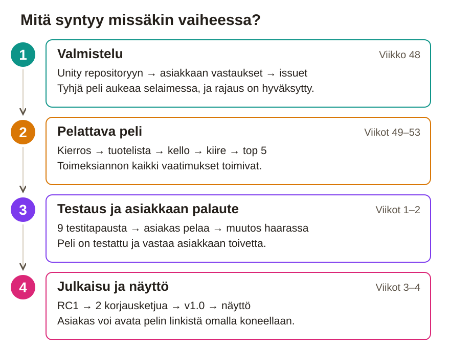

KahvilaKoodi
Paperinen työpaketti
Viikot 48–4
Tämä paketti on aikataulu ja tarkistuslista tilanteisiin, joissa sivusto ei ole auki. Projektipäiväkirja kirjoitetaan sivustolla ja viedään repositoryn project-docs-kansioon. Rasti tässä vihossa ei ole palautus: työ on aina Git-repositoryssa.
Mitä rakennat ja miten etenet
KahvilaKoodi on koulun kahvilapeli, jota pelataan selaimessa. Pelaaja palvelee tiskille saapuvia asiakkaita kellon käydessä, kiire kasvaa pisteiden mukana, ja parhaat tulokset säilyvät top 5 -listalla.
- 1. Pelaaja avaa pelin selaimessa ilman asennusta ja aloittaa kahvilavuoron aloitusvalikosta.
- 2. Asiakas tilaa 1–3 tuotetta. Pelaaja valitsee tuotteet ja painaa Toimita. Peli näyttää heti, menikö toimitus oikein, ja päivittää pisteet ja jäljellä olevan ajan.
- 3. Kun pisteet kasvavat, kiire kasvaa: tilaukset isonevat tai asiakkaat odottavat lyhyemmän ajan. Kierros päättyy, kun aika loppuu.
- 4. Tulosruutu näyttää pisteet. Pelaaja tallentaa tuloksen nimimerkillä, ja viiden parhaan tuloksen lista säilyy, kun peli avataan uudelleen.
Projektin 4 vaihetta

1. Valmistelu · viikot 48. Lisäät Unity-projektin repositoryyn ja kokeilet tyhjää peliä selaimessa. Kysyt asiakkaalta avoimet asiat ja pilkot ensimmäisen featuren GitHub-issueiksi, jotta rakennat sellaista peliä, jota asiakas haluaa.
2. Pelattava peli · viikot 49–53. Rakennat pelin toiminto kerrallaan: kierros, tuotelista, kello ja pisteet, kasvava kiire ja top 5 -lista. Joululomalla teet työtä itsenäisesti sovittuina päivinä, jouluviikolla kevyemmin.
3. Testaus ja asiakkaan palaute · viikot 1–2. Testaat pelin yhdeksällä testitapauksella. Sen jälkeen asiakas pelaa peliä, ja teet hänen toivomansa muutoksen omassa Git-haarassa.
4. Julkaisu ja näyttö · viikot 3–4. Uusi pelaaja testaa julkaisuehdokkaan. Korjaat kaksi virhettä, kirjaat kummastakin korjausketjun ja julkaiset version v1.0 GitHub Pagesiin. Lopuksi kokoat näyttöaineiston ja harjoittelet demon.
Viikon työvaihe on tämän sivuston työohje. Kun teet muutoksen peliin, kirjaa se GitHub-issueksi ja tee se Työtapa-sivun kuudella askeleella. Valmiiseen issueen lisätään kommentti ja linkki commitiin, testien tulokset ja viikon yhteenveto kirjataan projektipäiväkirjaan.
Aikataulu
| Vko | Pvm | Viikon aihe | Vaihe |
|---|
| 48 | 23.–27.11. | Aloitus: Unity-projekti ja asiakkaan kysymykset | 1 |
| 49 | 30.11.–4.12. | Feature 1 · Pelattava kierros | 2 |
| 50 | 7.–11.12. | Feature 2 · Kahvilan tuotelista | 2 |
| 51 | 14.–18.12. | Feature 3 · Kello ja pisteet | 2 |
| 52 | 21.–23.12. | Feature 4 · Kasvava kiire | 2 |
| 53 | 28.–31.12. | Feature 5 · Top 5 -lista | 2 |
| 1 | 4.–8.1. | Peli kestää pelaamista: testaus | 3 |
| 2 | 11.–15.1. | Feature 6 · Asiakas pelaa ja toivoo muutoksen | 3 |
| 3 | 18.–22.1. | Julkaisu v1.0 | 4 |
| 4 | 25.–29.1. | Näyttö ja luovutus | 4 |
Vaihe 1 – Valmistelu
Vko 48 · 23.–27.11. – Aloitus: Unity-projekti ja asiakkaan kysymykset
Yhteys kokonaisprojektiin: Repository ja pelin suunnitteludokumentti (GDD) ovat jo valmiina. Tällä viikolla lisäät repositoryyn Unity-projektin ja kokeilet, että tyhjä peli aukeaa selaimessa, koska valmis peli julkaistaan selainversiona. Sen jälkeen kysyt asiakkaalta GDD:n avoimet asiat ja pilkot ensimmäisen featuren pieniksi GitHub-issueiksi. Viikolla 49 rakennat niiden mukaan ensimmäisen pelattavan kierroksen.
Päivämäärät:
- Aloituspalaveri ohjaajan kanssa: ma 23.11.
- Aloituskeskustelu asiakkaan kanssa: sovitaan maanantaina, viimeistään to 26.11.
- Viikon kirjaus: pe 27.11.
Viikon tavoite: CafeGame-peli aukeaa selaimessa, Unity-projekti on GitHubissa, asiakkaan vastaukset ovat GDD:ssä ja ohjaaja on hyväksynyt ensimmäiset GitHub-issuet.
Kuvallinen tukiohje · viikko 48 · Unity 6
GitHub Desktop: kuvaohje ilman Git-komentoja
Avaa GDD tällä sivulla
Avaa toimeksianto
Työvaihe 1 / 4 · Luo Unity-projekti ja kokeile, aukeaako se selaimessa.
- ☐ Tarkista Unity-versio
Missä: Unity Hub, Installs
Tee: Tarkista, että oppilaitoksen sopima Unity-versio on asennettu ja siinä on Web Build Support. Jos Web Build Support puuttuu, valitse version valikosta Add modules ja asenna se.
Näet nyt: Version kohdalla lukee Web Build Support. Jos asennus kysyy ylläpitäjän salasanaa, pyydä ohjaaja avuksi. - ☐ Luo uusi projekti
Missä: Unity Hub, Projects
Tee: Paina New project ja valitse pohjaksi Universal 2D. Kirjoita nimeksi CafeGame. Valitse sijainniksi väliaikainen kansio, joka ei ole repositoryn sisällä. Paina Create project.
Näet nyt: Unity-editori aukeaa. Keskellä on Scene-ikkuna ja vasemmalla Hierarchy. - ☐ Tallenna scene
Missä: Unity, File-valikko
Tee: Valitse File → Save As. Tallenna scene nimellä CafeGame kansioon Assets/Scenes.
Näet nyt: Project-ikkunan Scenes-kansiossa näkyy CafeGame. Scene on pelin näkymä, johon pelin objektit tulevat. - ☐ Valitse selainalusta
Missä: Unity, File → Build Profiles
Tee: Valitse vasemmalta Web. Paina Switch Platform. Jos Unity näyttää sen sijaan painikkeen Add Build Profile, paina sitä ja sitten Switch Profile.
Näet nyt: Web on valittuna aktiiviseksi alustaksi. - ☐ Tee selainversio
Missä: Unity, Build Profiles
Tee: Paina Add Open Scenes ja poista rasti SampleScene-riviltä. Paina Build And Run ja valitse kansioksi Builds/Test.
Näet nyt: Selain avaa tyhjän CafeGame-pelin. - ☐ Ota kuva ja kirjaa versio
Missä: Selain ja Unity Hub
Tee: Ota selaimesta kuvakaappaus ja tallenna se työpöydälle nimellä web-test.png. Kirjoita muistiin Unity-versio, esimerkiksi 6000.0.xx. Versio näkyy Unity Hubissa projektin kohdalla.
Näet nyt: Työpöydällä on kuva web-test.png, ja Unity-versio on kirjattu.
Valmis kun: Tyhjä CafeGame-peli aukeaa selaimeen, ja sinulla on siitä kuvakaappaus.
Tallenna työnäyte: Unity-versio viikon 48 päiväkirjaan. Kuvakaappauksen viet repositoryyn työvaiheessa 2.
Työvaihe 2 / 4 · Siirrä Unity-projekti repositoryyn ja vie se GitHubiin.
- ☐ Avaa repositoryn kansio
Missä: GitHub Desktop
Tee: Valitse oma repositorysi ja sitten Repository → Show in Explorer. Jätä kansio auki.
Näet nyt: Tiedostoikkuna näyttää repositoryn kansion. Siellä on ainakin README.md ja .gitignore. - ☐ Kopioi projektin kansiot
Missä: Tiedostoikkuna
Tee: Sulje Unity. Kopioi työvaiheessa 1 tekemäsi CafeGame-projektin kansiosta kansiot Assets, Packages ja ProjectSettings repositoryn kansioon. Älä kopioi kansioita Library, Temp ja Builds.
Näet nyt: Repositoryn kansiossa ovat Assets, Packages, ProjectSettings ja README.md samalla tasolla. - ☐ Avaa projekti uudesta paikasta
Missä: Unity Hub, Projects
Tee: Valitse Add → Add project from disk ja valitse repositoryn kansio. Avaa projekti ja kaksoisklikkaa Assets/Scenes/CafeGame.
Näet nyt: Unity aukeaa repositoryn kansiosta, ja CafeGame-scene näkyy. - ☐ Vie kuvakaappaus talteen
Missä: Tiedostoikkuna
Tee: Luo repositoryyn kansio project-docs/evidence/week-48. Siirrä työpöydältä kuva web-test.png tähän kansioon.
Näet nyt: Kansiossa project-docs/evidence/week-48 on tiedosto web-test.png. - ☐ Tarkista muutokset
Missä: GitHub Desktop, Changes
Tee: Käy muutettujen tiedostojen lista läpi. Mukana pitää olla Assets, Packages, ProjectSettings ja project-docs.
Näet nyt: Listassa ei ole Library-, Temp- eikä Builds-kansiota. Jos ne näkyvät, pysähdy ja pyydä ohjaajaa tarkistamaan .gitignore. - ☐ Tee commit ja push
Missä: GitHub Desktop
Tee: Kirjoita Summary-kenttään Lisää Unity-projekti ja paina Commit to main. Paina sitten Push origin.
Näet nyt: Kun valitset Repository → View on GitHub, GitHubissa näkyvät Assets-kansio ja uusi commit.
Valmis kun: GitHubissa näkyvät Assets, Packages, ProjectSettings ja project-docs/evidence/week-48/web-test.png, ja Unity avaa projektin repositoryn kansiosta.
Tallenna työnäyte: Commitin linkki viikon 48 päiväkirjaan.
Työvaihe 3 / 4 · Kysy asiakkaalta pelin avoimet asiat ja päivitä GDD.
- ☐ Etsi avoimet asiat
Missä: Toimeksianto-näkymä ja Suunnitelma (GDD) -näkymä
Tee: Lue toimeksiannon laatikko Sovi asiakkaan kanssa. Katso GDD:stä, mitkä asiakkaan kanssa sovittavat kohdat ovat vielä tyhjiä.
Näet nyt: Tiedät laatikon neljä kysymystä, joihin asiakas vastaa. - ☐ Kirjoita viisi kysymystä
Missä: Projektipäiväkirja, viikko 48
Tee: Kirjoita laatikon neljä kysymystä päiväkirjaan ja lisää yksi oma kysymys. Kirjoita jokaisen kysymyksen perään, mitä pelissä päätät vastauksen perusteella.
Näet nyt: Päiväkirjassa on viisi kysymystä, esimerkiksi Kuinka pitkä kierros on? → ajastimen aloitusarvo. - ☐ Sovi keskustelun aika
Missä: Aloituspalaveri ohjaajan kanssa
Tee: Kysy ohjaajalta, kuka on asiakkaana ja milloin keskustelet asiakkaan kanssa tällä viikolla.
Näet nyt: Keskustelun päivä ja aika on kirjattu päiväkirjaan. - ☐ Kysy ja kirjaa vastaukset
Missä: Aloituskeskustelu asiakkaan kanssa
Tee: Kysy kysymykset yksi kerrallaan ja kirjoita vastaus heti ylös. Jos asiakas ei osaa vastata, kirjoita vastauksen paikalle sana avoin. Älä keksi vastausta itse tai tekoälyllä.
Näet nyt: Jokaisen kysymyksen perässä on vastaus tai sana avoin. - ☐ Päivitä GDD
Missä: VS Code, project-docs/gdd.md
Tee: Avaa tiedosto project-docs/gdd.md. Kirjoita kierroksen pituus ja muut asiakkaan vastaukset kohtaan, jossa ovat asiakkaan kanssa sovittavat asiat. Tallenna tiedosto.
Näet nyt: Tiedostossa näkyvät asiakkaan vastaukset. Avoimiksi jääneissä kohdissa lukee avoin. - ☐ Vie GitHubiin
Missä: GitHub Desktop
Tee: Tee commit viestillä Päivitä GDD asiakkaan vastauksilla ja paina Push origin.
Näet nyt: Commit näkyy GitHubissa.
Valmis kun: Päiväkirjassa on viisi kysymystä, ja jokaisen perässä on asiakkaan vastaus tai merkintä avoin. Päivitetty gdd.md on GitHubissa.
Tallenna työnäyte: Kysymykset, vastaukset, keskustelun päivä ja osallistujien roolit viikon 48 päiväkirjaan. Älä kirjoita muiden ihmisten nimiä.
Työvaihe 4 / 4 · Pilko ensimmäinen feature GitHub-issueiksi ja merkitse niiden tärkeys.
- ☐ Pilko ensimmäinen feature
Missä: Suunnitelma (GDD) -näkymä, lista Featuret tekojärjestyksessä
Tee: Lue listan ensimmäinen feature: pelattava kierros. Kirjoita paperille 3–5 pientä asiaa, joita siihen tarvitaan.
Näet nyt: Paperilla on esimerkiksi kolme ruutua, Aloita-painike ja ensimmäinen tilaus. - ☐ Tee issuet
Missä: GitHub, repositoryn Issues → New issue
Tee: Tee jokaisesta pienestä asiasta oma issue avun pohjalla. Aloita otsikko verbillä, esimerkiksi Näytä asiakkaan tilaus.
Näet nyt: Issues-listassa on 3–5 issueta. - ☐ Lisää arvio ja Valmis kun
Missä: GitHub, jokainen issue
Tee: Kirjoita jokaiseen issueen arvio, puoli päivää tai yksi päivä, ja Valmis kun -ehto: mitä toinen ihminen näkee pelissä, kun issue on tehty.
Näet nyt: Jokaisessa issuessa on arvio ja Valmis kun -ehto. - ☐ Lisää muut featuret
Missä: GitHub, Issues
Tee: Tee yksi issue kustakin muusta featuresta paitsi asiakkaan toivomasta muutoksesta. Pilkot ne tarkemmin sillä viikolla, kun teet niitä.
Näet nyt: Listassa on yksi issue tuotelistalle, kellolle, kasvavalle kiireelle ja top 5 -listalle. - ☐ Merkitse tärkeys
Missä: GitHub, Issues → Labels
Tee: Luo labelit P0 pakollinen, P1 tärkeä ja P2 lisä. Anna jokaiselle issuelle yksi label. Kaikki toimeksiannon vaatimukset ovat pakollisia (P0).
Näet nyt: Jokaisella issuella on yksi label. - ☐ Pyydä hyväksyntä
Missä: Ohjaajan kanssa
Tee: Näytä Issues-lista ohjaajalle ja pyydä hyväksyntä rajaukselle eli sille, mitä peliin tehdään ja mitä jätetään pois.
Näet nyt: Hyväksyjän rooli ja päivä on kirjattu päiväkirjaan.
Valmis kun: GitHubissa on 3–5 issueta pelattavalle kierrokselle ja yksi issue kustakin muusta featuresta. Jokaisessa on arvio, Valmis kun -ehto ja label pakollinen (P0), tärkeä (P1) tai lisä (P2), ja ohjaaja on hyväksynyt listan.
Tallenna työnäyte: Linkki GitHubin Issues-listaan sekä hyväksyjän rooli ja päivä viikon 48 päiväkirjaan.
Viikon lopputarkistus: Tyhjä CafeGame-peli aukeaa selaimessa, Unity-projekti näkyy GitHubissa, GDD:ssä on asiakkaan vastaukset ja GitHubissa on issuet tärkeysluokkineen.
Työnäyte Git-repositoryyn ennen rastia: Unity-projekti GitHubissa, selainkuva web-test.png, kysymykset ja asiakkaan vastaukset päiväkirjassa, päivitetty gdd.md ja GitHubin Issues-lista.
Vaihe 2 – Pelattava peli
Vko 49 · 30.11.–4.12. – Feature 1 · Pelattava kierros
Yhteys kokonaisprojektiin: Viikon 48 issueiden mukaan rakennat nyt pelin rungon. Piirrät ensin luonnoksen kolmesta ruudusta ja rakennat ruudut sen mukaan. Teet GameManager-skriptin, joka vaihtaa ruutua, ja ensimmäisen tilauksen, jonka jälkeen peliä voi pelata. Viikolla 50 kahvin tilalle tulevat oikeat tuotteet tiedostosta.
Päivämäärät:
- Aloituspalaveri ohjaajan kanssa: ma 30.11.
- Viikon kirjaus: pe 4.12.
Viikon tavoite: Peliä voi pelata alusta loppuun: Aloita → asiakas tilaa kahvin → pelaaja toimittaa → tulosruutu näyttää pisteet.
Kuvallinen tukiohje · viikko 49 · Unity 6
Kenney.nl – ilmaiset CC0-assetit: hahmot, esineet ja käyttöliittymäkuvat
OpenGameArt – 2D-hahmot ja taustat (tarkista lisenssi)
Piskel – piirrä omat spritet selaimessa
Työvaihe 1 / 4 · Piirrä luonnos pelin kolmesta ruudusta.
- ☐ Jaa paperi kolmeen osaan
Missä: Paperi
Tee: Jaa paperi kolmeen osaan ja kirjoita osien otsikoiksi Valikko, Peli ja Tulos.
Näet nyt: Paperilla on kolme ruutua otsikoineen. - ☐ Piirrä valikko
Missä: Paperi, Valikko-ruutu
Tee: Piirrä pelin nimi ja Aloita-painike.
Näet nyt: Valikko-ruudussa on nimi ja yksi painike. - ☐ Piirrä peliruutu
Missä: Paperi, Peli-ruutu
Tee: Piirrä asiakkaan tilaus, tuotepainikkeet Kahvi, Tee ja Sämpylä, Toimita-painike, aika, pisteet ja kohta, jossa peli kertoo, menikö toimitus oikein.
Näet nyt: Peli-ruudussa on kuusi asiaa. - ☐ Piirrä tulosruutu
Missä: Paperi, Tulos-ruutu
Tee: Piirrä loppupisteet, viiden parhaan tuloksen lista ja Pelaa uudelleen -painike.
Näet nyt: Tulos-ruudussa on kolme asiaa. - ☐ Piirrä nuolet
Missä: Paperi
Tee: Piirrä nuoli Aloita-painikkeesta peliruutuun, peliruudusta tulosruutuun ja Pelaa uudelleen -painikkeesta peliruutuun. Kirjoita peliruudun nuolen viereen: aika loppuu.
Näet nyt: Kolme nuolta näyttää, miten ruudusta siirrytään toiseen. - ☐ Tallenna kuva
Missä: Puhelin ja GitHub Desktop
Tee: Kuvaa paperi ja tallenna kuva polkuun project-docs/evidence/week-49/mockup.png. Tee commit ja push.
Näet nyt: Kuva näkyy GitHubissa.
Valmis kun: Kuvassa on kolme ruutua, ja nuolet näyttävät, mihin Aloita ja Pelaa uudelleen vievät ja milloin peli siirtyy tulosruutuun.
Tallenna työnäyte: Kuva polkuun project-docs/evidence/week-49/mockup.png, commit ja push.
Työvaihe 2 / 4 · Rakenna Unityyn valikko-, peli- ja tulosruutu.
- ☐ Lisää Canvas
Missä: Unity, Hierarchy
Tee: Avaa CafeGame-scene. Valitse + → UI → Canvas.
Näet nyt: Hierarchyssä ovat Canvas ja EventSystem. Canvas on alue, jolle tekstit ja painikkeet tulevat. - ☐ Tee kolme paneelia
Missä: Unity, Hierarchy
Tee: Klikkaa Canvasia hiiren oikealla ja valitse UI → Panel. Tee näin kolme paneelia ja nimeä ne MenuPanel, GamePanel ja ResultPanel.
Näet nyt: Canvasin alla on kolme paneelia. - ☐ Rakenna valikko
Missä: Unity, MenuPanel
Tee: Lisää MenuPaneliin teksti UI → Text - TextMeshPro ja kirjoita siihen pelin nimi. Lisää painike UI → Button - TextMeshPro, nimeä se StartButton ja kirjoita sen tekstiksi Aloita.
Näet nyt: MenuPanelissa näkyvät pelin nimi ja Aloita-painike. Jos Unity kysyy, paina Import TMP Essentials. - ☐ Rakenna peliruutu
Missä: Unity, GamePanel
Tee: Lisää GamePaneliin tekstit OrderText, ScoreText ja TimeText. Lisää painikkeet CoffeeButton tekstillä Kahvi ja SubmitButton tekstillä Toimita.
Näet nyt: GamePanelissa on kolme tekstiä ja kaksi painiketta. - ☐ Rakenna tulosruutu
Missä: Unity, ResultPanel
Tee: Lisää ResultPaneliin teksti FinalScoreText ja painike RestartButton tekstillä Pelaa uudelleen. Siirrä kaikkien ruutujen tekstit ja painikkeet luonnoksesi mukaisille paikoille.
Näet nyt: Tekstit ja painikkeet eivät ole päällekkäin. - ☐ Piilota peli ja tulos
Missä: Unity, Inspector
Tee: Valitse GamePanel ja poista rasti Inspectorin yläreunasta nimen vierestä. Tee sama ResultPanelille. Paina Play.
Näet nyt: Play-tilassa näkyy vain valikko.
Valmis kun: Hierarchy näyttää samalta kuin avun rakenne, ja Play-tilassa näkyy vain valikko.
Tallenna työnäyte: Kuvakaappaus Hierarchy-ikkunasta polkuun project-docs/evidence/week-49/hierarchy.png, commit ja push.
Työvaihe 3 / 4 · Tee GameManager-skripti, joka vaihtaa ruutua.
- ☐ Luo skripti
Missä: Unity, Project-ikkuna
Tee: Luo Assets-kansioon kansio Scripts. Klikkaa sitä hiiren oikealla ja valitse Create → Scripting → MonoBehaviour Script. Anna nimeksi GameManager.
Näet nyt: Scripts-kansiossa on GameManager. - ☐ Liitä työpohja
Missä: VS Code
Tee: Avaa skripti kaksoisklikkaamalla. Korvaa sen sisältö avun työpohjalla ja tallenna.
Näet nyt: Unityn Console-ikkunassa ei ole punaisia virheitä. - ☐ Tee GameManager-objekti
Missä: Unity, Hierarchy
Tee: Valitse + → Create Empty ja nimeä objekti GameManager. Raahaa GameManager-skripti sen päälle.
Näet nyt: Inspectorissa näkyvät GameManager-skripti ja sen tyhjät kentät. - ☐ Kytke paneelit
Missä: Unity, Inspector
Tee: Raahaa MenuPanel, GamePanel ja ResultPanel Hierarchystä kenttiin Menu Panel, Game Panel ja Result Panel.
Näet nyt: Kentissä lukevat paneelien nimet eikä None. - ☐ Kytke painikkeet
Missä: Unity, Inspector, Button-komponentti
Tee: Valitse StartButton ja paina On Click () -listan +. Raahaa GameManager-objekti uuden rivin tyhjään kenttään ja valitse GameManager → StartGame. Kytke RestartButton samalla tavalla metodiin RestartGame.
Näet nyt: Kummankin painikkeen On Click () -listassa on yksi rivi. - ☐ Kokeile
Missä: Unity, Play
Tee: Paina Play ja sitten Aloita.
Näet nyt: Peliruutu tulee näkyviin, ja valikko katoaa.
Valmis kun: Play-tilassa Aloita vaihtaa valikon peliruutuun.
Tallenna työnäyte: Commit ja push. Commit-linkki viikon 49 päiväkirjaan.
Työvaihe 4 / 4 · Tee ensimmäinen tilaus ja kokeile peliä selaimessa.
- ☐ Kytke tekstit
Missä: Unity, Inspector
Tee: Valitse GameManager-objekti. Raahaa OrderText, ScoreText ja FinalScoreText skriptin kenttiin.
Näet nyt: Kentissä lukevat tekstien nimet. - ☐ Täydennä aloitus
Missä: VS Code, GameManager.cs
Tee: Täydennä StartGame-metodin TODO-rivit: kirjoita OrderText-tekstiin Asiakas tilaa: Kahvi ja näytä pisteet ScoreText-tekstissä.
Näet nyt: Play-tilassa peliruudulla lukee Asiakas tilaa: Kahvi. - ☐ Kytke Kahvi ja Toimita
Missä: Unity, Inspector
Tee: Kytke CoffeeButtonin On Click () -listaan GameManager → SelectCoffee ja SubmitButtonin listaan GameManager → SubmitOrder.
Näet nyt: Kummassakin painikkeessa on yksi On Click () -rivi. - ☐ Täydennä toimitus ja loppu
Missä: VS Code, GameManager.cs
Tee: Täydennä SubmitOrder: jos kahvi on valittu, lisää pisteisiin 10. Täydennä EndGame: näytä pisteet FinalScoreText-tekstissä.
Näet nyt: Play-tilassa Aloita → Kahvi → Toimita näyttää tulosruudulla 10 pistettä. - ☐ Kirjoita odotettu tulos
Missä: Projektipäiväkirja, viikko 49
Tee: Kirjoita ennen selainkokeilua odotettu tulos: Aloita → Kahvi → Toimita → tulosruudulla 10.
Näet nyt: Odotettu tulos on kirjattu ennen kokeilua. - ☐ Kokeile selaimessa
Missä: Unity, File → Build Profiles → Build And Run
Tee: Tee selainversio ja pelaa kierros kahdesti. Käytä välillä Pelaa uudelleen -painiketta. Kirjaa jokaisesta kierroksesta, menikö se odotetusti.
Näet nyt: Molemmilla kerroilla tulosruudulla lukee 10. Jos ei, kirjaa ensin, mitä tapahtui, ja korjaa vasta sitten.
Valmis kun: Aloita → Kahvi → Toimita → tulosruudulla lukee 10 pistettä, myös selainversiossa.
Tallenna työnäyte: Kahden selainkokeilun tulokset viikon 49 päiväkirjaan. Commit ja push sekä commit-linkki päiväkirjaan.
Viikon lopputarkistus: Aloita → Kahvi → Toimita → tulosruudulla lukee 10 pistettä. Polku toimii myös selainversiossa.
Työnäyte Git-repositoryyn ennen rastia: Luonnos mockup.png, kuva Hierarchy-ikkunasta, kaksi selainkokeilua päiväkirjassa ja commit-linkit.
Vko 50 · 7.–11.12. – Feature 2 · Kahvilan tuotelista
Yhteys kokonaisprojektiin: Viikolla 49 asiakas tilasi aina kahvin. Nyt tuotteet tulevat products.json-tiedostosta, joten valikoimaa voi muuttaa koskematta koodiin. Kolme skriptiä jakaa työn: ProductDatabase lukee tiedoston, OrderManager arpoo tilauksen ja tarkistaa toimituksen, ja GameManager näyttää tekstit. Viikolla 51 peliin tulee kello.
Päivämäärät:
- Aloituspalaveri ohjaajan kanssa: ma 7.12.
- Viikon kirjaus: pe 11.12.
Viikon tavoite: Asiakas tilaa 1–3 tuotetta, jotka arvotaan products.json-tiedostosta, ja pelaaja valitsee tuotteet painikkeilla.
Työvaihe 1 / 4 · Kirjoita kahvilan tuotteet products.json-tiedostoon.
- ☐ Luo tiedosto
Missä: Unity, Project-ikkuna ja VS Code
Tee: Luo Assets-kansioon kansio Data. Luo sinne VS Codella tiedosto products.json.
Näet nyt: Project-ikkunassa näkyvät Data-kansio ja sen sisällä products.json. - ☐ Kirjoita kolme tuotetta
Missä: VS Code, products.json
Tee: Kirjoita tiedostoon kolme tuotetta avun mallin mukaan. Jokaisella tuotteella on id (tunniste), name (nimi) ja points (pisteet).
Näet nyt: Tiedostossa ovat kahvi, tee ja sämpylä. - ☐ Anna pisteet
Missä: VS Code, products.json
Tee: Anna points-arvoksi se pistemäärä, jonka päätit GDD:ssä oikealle toimitukselle, esimerkiksi 10.
Näet nyt: Jokaisella tuotteella on pistearvo. - ☐ Tarkista muoto
Missä: VS Code, products.json
Tee: Tarkista lainausmerkit nimien ympärillä, pilkut tuotteiden välissä ja hakasulkeet listan ympärillä. Tallenna tiedosto.
Näet nyt: VS Code ei näytä punaista alleviivausta. - ☐ Katso tiedosto Unityssä
Missä: Unity, Project-ikkuna
Tee: Klikkaa products.json-tiedostoa.
Näet nyt: Inspector näyttää tiedoston sisällön ja kolme tuotetta.
Valmis kun: Unityn Inspector näyttää products.json-tiedoston, ja siinä on kolme tuotetta.
Tallenna työnäyte: Commit ja push.
Työvaihe 2 / 4 · Lue tuotteet tiedostosta ProductDatabase-skriptillä.
- ☐ Luo skripti
Missä: Unity, Scripts-kansio
Tee: Luo skripti ProductDatabase ja korvaa sen sisältö avun työpohjalla.
Näet nyt: Console-ikkunassa ei ole punaisia virheitä. - ☐ Lue luokat
Missä: VS Code, ProductDatabase.cs
Tee: Lue työpohjasta kaksi luokkaa: ProductData on yksi tuote ja ProductList on tuotteiden lista.
Näet nyt: Tiedät, missä luokassa ovat kentät id, name ja points. - ☐ Tee objekti
Missä: Unity, Hierarchy
Tee: Luo tyhjä objekti ProductDatabase ja raahaa skripti sen päälle.
Näet nyt: Inspectorissa näkyy kenttä Products Json. - ☐ Kytke tiedosto
Missä: Unity, Inspector
Tee: Raahaa products.json Project-ikkunasta kenttään Products Json.
Näet nyt: Kentässä lukee products. - ☐ Täydennä tyhjän kentän tarkistus
Missä: VS Code, ProductDatabase.cs
Tee: Täydennä TODO 1: jos Products Json -kenttä on tyhjä, kirjoita virheilmoitus Consoleen ja palauta tyhjä lista.
Näet nyt: Console-ikkunassa ei ole punaisia virheitä. - ☐ Täydennä rikkinäisen tiedoston tarkistus
Missä: VS Code, ProductDatabase.cs
Tee: Täydennä TODO 2: ota rikkinäisen JSONin virhe kiinni try–catch-lohkolla ja kirjoita virheilmoitus Consoleen. Aja sitten avun tarkistustesti.
Näet nyt: Avun tarkistustestissä Console näyttää Kahvi.
Valmis kun: Molemmat TODO-kohdat on täydennetty, ja avun tarkistustestissä Console näyttää Kahvi.
Tallenna työnäyte: Commit ja push.
Työvaihe 3 / 4 · Arvo asiakkaalle 1–3 tuotteen tilaus OrderManager-skriptillä.
- ☐ Luo skripti
Missä: Unity, Scripts-kansio
Tee: Luo skripti OrderManager avun työpohjasta ja liitä se GameManager-objektiin.
Näet nyt: GameManager-objektin Inspectorissa on kaksi skriptiä. - ☐ Kytke tuotelista
Missä: Unity, Inspector
Tee: Raahaa ProductDatabase-objekti OrderManager-skriptin kenttään Product Database.
Näet nyt: Kentässä lukee ProductDatabase. - ☐ Täydennä tilauksen arvonta
Missä: VS Code, OrderManager.cs
Tee: Täydennä CreateOrder: arvo tilaukseen 1–3 tuotetta listasta ja palauta tilausteksti, esimerkiksi Asiakas tilaa: Kahvi, Sämpylä.
Näet nyt: Console-ikkunassa ei ole punaisia virheitä. - ☐ Kytke GameManager
Missä: VS Code ja Unity, Inspector
Tee: Lisää GameManageriin kenttä [SerializeField] private OrderManager orderManager; ja raahaa GameManager-objekti Inspectorissa GameManager-skriptin kenttään Order Manager.
Näet nyt: Kentässä lukee GameManager. - ☐ Näytä tilaus
Missä: VS Code, GameManager.cs
Tee: Muuta StartGame-metodia niin, että OrderText-tekstiin tulee CreateOrder-metodin palauttama teksti.
Näet nyt: Play-tilassa peliruudulla näkyy arvottu tilaus. - ☐ Kokeile viisi kertaa
Missä: Unity, Play
Tee: Paina Aloita, katso tilaus ja paina Toimita. Paina tulosruudulla Pelaa uudelleen. Toista, kunnes olet nähnyt viisi tilausta. Kirjaa tilaukset päiväkirjaan.
Näet nyt: Tilaus vaihtuu, ja siinä on 1–3 tuotetta.
Valmis kun: Play-tilassa tilaus vaihtuu joka pelissä, ja siinä on 1–3 tuotetta.
Tallenna työnäyte: Viisi tilausta viikon 50 päiväkirjaan. Commit ja push.
Työvaihe 4 / 4 · Tee tuotepainikkeet ja tarkista, menikö toimitus oikein.
- ☐ Lisää painikkeet
Missä: Unity, GamePanel
Tee: Lisää GamePaneliin painikkeet TeaButton tekstillä Tee ja BreadButton tekstillä Sämpylä.
Näet nyt: Peliruudulla on kolme tuotepainiketta. - ☐ Poista vanha kytkentä
Missä: Unity, CoffeeButton, Inspector
Tee: Valitse On Click () -listasta rivi SelectCoffee ja paina −.
Näet nyt: CoffeeButtonin On Click () -lista on tyhjä. - ☐ Kytke tuotepainikkeet
Missä: Unity, Inspector
Tee: Kytke kolme tuotepainiketta GameManager-objektin metodiin OrderManager → SelectProduct. Kirjoita parametriksi tuotteen id: kahvi, tee tai sampyla.
Näet nyt: Jokaisen painikkeen On Click () -rivillä näkyy oma id. - ☐ Täydennä tarkistus
Missä: VS Code, OrderManager.cs
Tee: Täydennä CheckDelivery avun mallin mukaan: metodi palauttaa oikeasta toimituksesta tuotteiden pisteet yhteensä ja väärästä 0.
Näet nyt: Console-ikkunassa ei ole punaisia virheitä. - ☐ Laske pisteet
Missä: VS Code, GameManager.cs
Tee: Muuta SubmitOrder-metodia niin, että pisteisiin lisätään CheckDelivery-metodin palauttama arvo.
Näet nyt: Play-tilassa oikea toimitus antaa tuotteiden pisteet ja väärä 0. - ☐ Kirjoita tiedon kulku
Missä: Projektipäiväkirja, viikko 50
Tee: Kirjoita omin sanoin, mitä tiedolle tapahtuu jokaisen nuolen kohdalla: products.json → ProductDatabase → OrderManager → GameManager → OrderText.
Näet nyt: Jokaisen nuolen kohdalla on yksi virke.
Valmis kun: Oikea toimitus antaa tuotteiden pisteet yhteensä, väärä toimitus antaa 0 pistettä, ja tiedon kulku on kirjattu.
Tallenna työnäyte: Tiedon kulku viikon 50 päiväkirjaan. Commit ja push.
Viikon lopputarkistus: Tilaus vaihtuu joka pelissä, ja siinä on 1–3 tuotetta. Oikea toimitus antaa tuotteiden pisteet yhteensä, ja väärä toimitus antaa 0 pistettä.
Työnäyte Git-repositoryyn ennen rastia: products.json, ProductDatabase- ja OrderManager-skriptit committeina sekä tiedon kulku päiväkirjassa.
Vko 51 · 14.–18.12. – Feature 3 · Kello ja pisteet
Yhteys kokonaisprojektiin: Viikolla 50 peli päättyi ensimmäiseen toimitukseen. Nyt kello päättää kierroksen, ja palaute kertoo heti, menikö toimitus oikein. Tämä on viimeinen viikko ennen joululomaa, joten sovit maanantaina myös loman työpäivät. Ohjaaja on tavoitettavissa vielä torstaina.
Päivämäärät:
- Aloituspalaveri ja lomaviikkojen sopiminen: ma 14.12.
- Ohjaaja tavoitettavissa viimeisen kerran ennen lomaa: to 17.12.
- Viikon kirjaus, commit ja push ennen lomaa: pe 18.12.
Viikon tavoite: Kello laskee, pelaaja näkee heti, menikö toimitus oikein, ja kierros päättyy vasta, kun aika loppuu.
Työvaihe 1 / 3 · Sovi ohjaajan kanssa lomaviikkojen työpäivät.
- ☐ Katso lomaviikot
Missä: Tämä sivusto, viikot 52, 53 ja 1
Tee: Avaa viikot 52, 53 ja 1 ja lue niiden Päivärytmi.
Näet nyt: Tiedät, mitä kullakin lomaviikolla tehdään. - ☐ Valitse työpäivät
Missä: Aloituspalaveri ohjaajan kanssa
Tee: Sovi ohjaajan kanssa, minä päivinä ja mihin aikaan teet projektia viikoilla 52, 53 ja 1 ja millä koneella. Viikolla 52 työpäiviä on kolme (ma–ke), ja ne voivat olla lyhyitä.
Näet nyt: Sinulla on lista päivistä, kellonajoista ja koneesta. - ☐ Kirjaa suunnitelma
Missä: Projektipäiväkirja, viikko 51
Tee: Kirjoita jokaiselle sovitulle päivälle kellonaika ja työvaihe, josta aloitat.
Näet nyt: Päiväkirjassa ovat lomaviikkojen työpäivät ja aloituskohdat. - ☐ Lisää muistutukset
Missä: Puhelin tai oma kalenteri
Tee: Lisää sovitut työpäivät kalenteriin muistutuksineen.
Näet nyt: Kalenterissa on muistutus jokaisena sovittuna päivänä. - ☐ Käy kesken jäävän työn sääntö läpi
Missä: Aloituspalaveri ohjaajan kanssa
Tee: Lue ohjaajan kanssa Jos et tiedä, mitä tehdä -ohjeen kohta 5. Siinä kerrotaan, mitä teet lomalla kesken jääneelle työlle. Sovi, muutetaanko sääntöä.
Näet nyt: Sääntö tai sovittu muutos on kirjattu viikon 51 päiväkirjaan. - ☐ Kokeile lomakone
Missä: Lomalla käyttämäsi kone
Tee: Jos teet lomalla eri koneella kuin koulussa, asenna sinne Unity, Web Build Support ja GitHub Desktop. Kloonaa repository ja tee Build And Run viimeistään to 17.12.
Näet nyt: Peli aukeaa lomakoneen selaimessa. Jos käytät samaa konetta kuin koulussa, rastita tämä heti.
Valmis kun: Lomaviikkojen työpäivät, kellonajat ja aloituskohdat ovat päiväkirjassa ja kalenterissa, ja kesken jäävästä työstä on sovittu.
Tallenna työnäyte: Lomaviikkojen suunnitelma viikon 51 päiväkirjaan.
Työvaihe 2 / 3 · Lisää peliin ajastin, joka päättää kierroksen.
- ☐ Päätä säännöt
Missä: Projektipäiväkirja, viikko 51
Tee: Kirjoita kierroksen pituus sekunteina. Käytä asiakkaan kanssa sovittua pituutta tai, jos sitä ei ole sovittu, 60 sekuntia. Kirjoita myös, saavatko pisteet mennä alle nollan, ja perustele yhdellä virkkeellä.
Näet nyt: Päiväkirjassa on kaksi sääntöä: kierroksen pituus sekunteina ja päätös siitä, saavatko pisteet mennä alle nollan. - ☐ Lisää kentät
Missä: VS Code, GameManager.cs
Tee: Lisää GameManageriin avun työpohjan neljä kenttää: timeText, roundSeconds (kierroksen pituus), timeLeft (jäljellä oleva aika) ja isPlaying (onko peli käynnissä).
Näet nyt: Console-ikkunassa ei ole punaisia virheitä. - ☐ Kytke aika
Missä: Unity, Inspector
Tee: Raahaa TimeText GameManager-skriptin kenttään Time Text. Kirjoita Round Seconds -kenttään kierroksen pituus.
Näet nyt: Kentissä ovat TimeText ja oma lukusi. - ☐ Käynnistä kello
Missä: VS Code, GameManager.cs
Tee: Täydennä StartGame: timeLeft saa kierroksen pituuden ja isPlaying arvon true. Lisää avun Update-metodi ja täydennä sen TODO: näytä aika TimeText-tekstissä.
Näet nyt: Play-tilassa aika laskee peliruudulla. - ☐ Pysäytä kello lopussa
Missä: VS Code, GameManager.cs
Tee: Kirjoita EndGame-metodin ensimmäiseksi riviksi isPlaying = false;. Poista SubmitOrder-metodista EndGame-kutsu.
Näet nyt: Pelaaja voi toimittaa monta tilausta, ja tulosruutu aukeaa kerran, kun aika on 0.
Valmis kun: Play-tilassa aika laskee, pelaaja voi toimittaa monta tilausta ja tulosruutu aukeaa kerran, kun aika on 0.
Tallenna työnäyte: Säännöt viikon 51 päiväkirjaan. Commit ja push.
Työvaihe 3 / 3 · Näytä pelaajalle heti, menikö toimitus oikein.
- ☐ Lisää palauteteksti
Missä: Unity, GamePanel
Tee: Lisää GamePaneliin teksti UI → Text - TextMeshPro ja nimeä se FeedbackText.
Näet nyt: Peliruudulla on uusi tekstikenttä. - ☐ Kytke teksti
Missä: VS Code ja Unity, Inspector
Tee: Lisää GameManageriin kenttä [SerializeField] private TMP_Text feedbackText; ja raahaa FeedbackText Inspectorissa kenttään Feedback Text.
Näet nyt: Kentässä lukee FeedbackText. - ☐ Näytä oikea toimitus
Missä: VS Code, GameManager.cs, SubmitOrder
Tee: Kun CheckDelivery palauttaa enemmän kuin 0, lisää pisteet ja kirjoita FeedbackText-tekstiin esimerkiksi Oikein! +10.
Näet nyt: Play-tilassa oikea toimitus näyttää Oikein-tekstin pisteineen. - ☐ Näytä väärä toimitus
Missä: VS Code, GameManager.cs, SubmitOrder
Tee: Kun toimitus on väärin, vähennä pisteitä GDD:n mukaan, noudata sääntöäsi siitä, saavatko pisteet mennä alle nollan, ja kirjoita FeedbackText-tekstiin esimerkiksi Väärä tilaus −5.
Näet nyt: Väärä toimitus näyttää eri palautteen kuin oikea. - ☐ Jatka peliä
Missä: VS Code, GameManager.cs, SubmitOrder
Tee: Päivitä ScoreText jokaisen toimituksen jälkeen ja tee uusi tilaus CreateOrder-metodilla.
Näet nyt: Toimituksen jälkeen pisteet päivittyvät, ja uusi tilaus näkyy heti. - ☐ Tallenna ennen lomaa
Missä: GitHub Desktop
Tee: Tee commit ja push. Avaa GitHub ja tarkista, että uusin commit näkyy.
Näet nyt: GitHubissa näkyy viikon viimeinen commit, joten peli on tallessa ennen lomaa.
Valmis kun: Oikea ja väärä toimitus näyttävät eri palautteen, pisteet muuttuvat sääntöjen mukaan ja peli jatkuu uudella tilauksella, kunnes aika loppuu.
Tallenna työnäyte: Kuvakaappaukset molemmista palautteista kansioon project-docs/evidence/week-51/, commit ja push.
Viikon lopputarkistus: Lomaviikkojen työpäivät on kirjattu. Aika laskee, pelaaja voi toimittaa monta tilausta, palaute näkyy jokaisen toimituksen jälkeen ja tulosruutu aukeaa kerran, kun aika on 0.
Työnäyte Git-repositoryyn ennen rastia: Lomaviikkojen suunnitelma ja säännöt päiväkirjassa, kuvat oikean ja väärän toimituksen palautteesta ja commit-linkit.
Vko 52 · 21.–23.12. – Feature 4 · Kasvava kiire
Yhteys kokonaisprojektiin: Peli toimii nyt kellon kanssa alusta loppuun. Jouluviikolla on kolme työpäivää, ja teet vain yhden pienen featuren: valitset, miten peli vaikeutuu, ja lisäät kolme vaikeustasoa valmiilla työpohjalla. Ohjaaja ei ole tavoitettavissa, joten jos jäät jumiin, kirjaa kohta ja jatka seuraavasta osatehtävästä.
Päivämäärät:
- Ohjaaja ja asiakas eivät ole tavoitettavissa: pe 18.12. – ma 11.1.
- Työpäivät: ma–ke 21.–23.12. (jouluaatto to 24.12., joulupäivä pe 25.12.)
- Viikon kirjaus: ke 23.12.
Viikon tavoite: Pelissä on kolme vaikeustasoa: kun pisteet kasvavat, tilaukset isonevat tai asiakkaat odottavat lyhyemmän ajan.
Työvaihe 1 / 2 · Valitse, miten peli vaikeutuu, ja perustele valinta.
- ☐ Lue vaihtoehdot
Missä: Tämä sivu
Tee: Lue kaksi tapaa vaikeuttaa peliä: A = tilauksissa on enemmän tuotteita, B = asiakas odottaa lyhyemmän ajan.
Näet nyt: Tiedät, mitä kumpikin tapa muuttaa pelissä. - ☐ Arvioi kolmella kysymyksellä
Missä: Projektipäiväkirja, viikko 52
Tee: Vastaa kummastakin tavasta kolmeen kysymykseen: Huomaako pelaaja vaikeutumisen? Onko arvoja helppo säätää? Onko sitä helppo testata?
Näet nyt: Päiväkirjassa on kuusi lyhyttä vastausta. - ☐ Valitse ja perustele
Missä: Projektipäiväkirja, viikko 52
Tee: Valitse A tai B. Jouluviikolla teet yhden tavan. Kirjoita valinta ja kaksi perustelua.
Näet nyt: Päiväkirjassa ovat valinta ja kaksi perustelua.
Valmis kun: Päiväkirjassa ovat molemmat tavat, kolmen kysymyksen vastaukset, valinta ja kaksi perustelua.
Tallenna työnäyte: Valinta ja perustelut viikon 52 päiväkirjaan.
Työvaihe 2 / 2 · Tee kolme vaikeustasoa, joita voi säätää Inspectorissa.
- ☐ Luo skripti
Missä: Unity, Scripts-kansio
Tee: Luo skripti DifficultyController avun työpohjasta ja liitä se GameManager-objektiin.
Näet nyt: Inspectorissa näkyy Levels-lista. - ☐ Kytke GameManageriin
Missä: VS Code ja Unity, Inspector
Tee: Lisää GameManageriin kenttä [SerializeField] private DifficultyController difficultyController; ja raahaa GameManager-objekti Inspectorissa GameManager-skriptin kenttään Difficulty Controller.
Näet nyt: Kentässä lukee GameManager. - ☐ Täytä tasot
Missä: Unity, Inspector, Levels
Tee: Aseta listan kooksi 3 ja täytä tasot avun taulukon tai omien arvojesi mukaan.
Näet nyt: Listassa on kolme tasoa arvoineen. - ☐ Täydennä GetLevel
Missä: VS Code, DifficultyController.cs
Tee: Täydennä TODO: palauta korkein taso, jonka aloituspisteet (minScore) pelaaja on jo saavuttanut.
Näet nyt: Console-ikkunassa ei ole punaisia virheitä. - ☐ Etsi muutettavat kohdat
Missä: VS Code, GameManager.cs
Tee: Etsi kaksi kohtaa, joissa CreateOrder-metodia kutsutaan: StartGame ja SubmitOrder.
Näet nyt: Tiedät kaksi kohtaa, joihin teet muutoksen. - ☐ Käytä tasoa pelissä
Missä: VS Code, GameManager.cs ja OrderManager.cs
Tee: Tee muutos molempiin kohtiin. Tapa A: muuta CreateOrder muotoon CreateOrder(int count) ja anna tuotemäärä tasolta. Tapa B: aseta asiakkaan odotusaika tasolta avun mallin mukaan.
Näet nyt: Console-ikkunassa ei ole punaisia virheitä. - ☐ Kokeile tasoja
Missä: Unity, Play
Tee: Tapa A: tee avun testi raja-arvoilla 0, 31 ja 61. Tapa B: aseta Inspectorissa tason 0 customerTime arvoon 3, paina Play ja Aloita äläkä toimita. Palauta arvot ja poista testirivi lopuksi.
Näet nyt: Tavassa A tilauksen koko vastaa tasoa. Tavassa B asiakas lähtee 3 sekunnin jälkeen, ja uusi tilaus tulee. - ☐ Tallenna
Missä: GitHub Desktop
Tee: Tee commit ja push.
Näet nyt: Commit näkyy GitHubissa.
Valmis kun: Kun kokeilet peliä tasojesi raja-arvoilla, peli käyttää jokaisella raja-arvolla eri tasoa, ja tasojen arvoja voi muuttaa Inspectorissa.
Tallenna työnäyte: Tasojen arvot ja testin tulos viikon 52 päiväkirjaan. Commit ja push.
Viikon lopputarkistus: Valinta on perusteltu päiväkirjassa, ja kun kokeilet peliä tasojesi raja-arvoilla (esimerkiksi 0, 31 ja 61 pistettä), tilauksen koko tai asiakkaan odotusaika muuttuu tason mukaan.
Työnäyte Git-repositoryyn ennen rastia: Valinta perusteluineen päiväkirjassa, tasojen arvot ja commit-linkki.
Vko 53 · 28.–31.12. – Feature 5 · Top 5 -lista
Yhteys kokonaisprojektiin: Tällä viikolla teet viimeisen pakollisen featuren: peli tallentaa parhaat tulokset. SaveService tallentaa listan selaimen muistiin ja lataa sen sieltä, ja tulosruutu näyttää listan. Ohjaaja ei ole tavoitettavissa, joten tee yksi osatehtävä kerrallaan sovittuina työpäivinä, ja jos jäät jumiin, toimi Jos et tiedä, mitä tehdä -ohjeen mukaan.
Päivämäärät:
- Ohjaaja ja asiakas eivät ole tavoitettavissa: pe 18.12. – ma 11.1.
- Työpäivät: ma–to 28.–31.12. (uudenvuodenpäivä pe 1.1.)
- Viikon kirjaus: to 31.12.
Viikon tavoite: Pelaaja tallentaa tuloksensa nimimerkillä, ja viisi parasta tulosta näkyy yhä, kun peli avataan uudelleen.
Työvaihe 1 / 4 · Tee SaveService-skripti, joka tallentaa viisi parasta tulosta.
- ☐ Luo skripti ja objekti
Missä: Unity
Tee: Luo skripti SaveService avun työpohjasta. Luo tyhjä objekti SaveService ja raahaa skripti sen päälle.
Näet nyt: Hierarchyssä on SaveService-objekti. - ☐ Lue luokat
Missä: VS Code, SaveService.cs
Tee: Lue työpohjasta kaksi luokkaa: ScoreEntry on yksi tulos (nimimerkki ja pisteet) ja ScoreList on tulosten lista.
Näet nyt: Tiedät, missä nimimerkki ja pisteet ovat. - ☐ Täydennä tallennus
Missä: VS Code, SaveService.cs
Tee: Täydennä SaveScore: lisää uusi tulos listaan, järjestä lista pisteiden mukaan suurimmasta pienimpään ja poista kuudes tulos ja sitä huonommat.
Näet nyt: Console-ikkunassa ei ole punaisia virheitä. - ☐ Selitä tallennusrivit
Missä: Projektipäiväkirja, viikko 53
Tee: Kirjoita omin sanoin, mitä JsonUtility.ToJson, PlayerPrefs.SetString ja PlayerPrefs.Save tekevät.
Näet nyt: Päiväkirjassa on kolme omaa virkettä. - ☐ Täydennä lataus
Missä: VS Code, SaveService.cs
Tee: Täydennä LoadScores: jos tallennusta ei ole, palauta tyhjä lista. Muuten lue teksti PlayerPrefs.GetString-metodilla ja muuta se takaisin listaksi.
Näet nyt: Console-ikkunassa ei ole punaisia virheitä.
Valmis kun: SaveScore ja LoadScores on täydennetty, ja päiväkirjassa on omin sanoin kirjoitettu selitys tallennusriveistä.
Tallenna työnäyte: Selitys viikon 53 päiväkirjaan. Commit ja push.
Työvaihe 2 / 4 · Lisää tulosruutuun nimimerkki ja viiden parhaan lista.
- ☐ Lisää kenttä ja painike
Missä: Unity, ResultPanel
Tee: Lisää syöttökenttä UI → Input Field - TextMeshPro ja nimeä se NicknameInput. Lisää painike SaveScoreButton tekstillä Tallenna tulos.
Näet nyt: Tulosruudulla ovat kenttä ja painike. - ☐ Lisää lista
Missä: Unity, ResultPanel
Tee: Lisää teksti HighScoresText ja tee siitä niin korkea, että siihen mahtuu viisi riviä. Siirrä tekstit, kenttä ja painikkeet erilleen.
Näet nyt: Tulosruudun osat eivät ole päällekkäin. - ☐ Lisää koodi
Missä: VS Code, GameManager.cs
Tee: Lisää avun kentät nicknameInput, highScoresText ja saveService sekä metodit ShowHighScores ja SaveCurrentScore.
Näet nyt: Console-ikkunassa ei ole punaisia virheitä. - ☐ Kytke kentät
Missä: Unity, Inspector
Tee: Raahaa NicknameInput, HighScoresText ja SaveService-objekti GameManager-skriptin kenttiin.
Näet nyt: Missään kentässä ei lue None. - ☐ Kytke tallennus
Missä: VS Code ja Unity, Inspector
Tee: Täydennä SaveCurrentScore avun TODO-rivien mukaan. Kytke SaveScoreButtonin On Click () -listaan GameManager → SaveCurrentScore.
Näet nyt: Tallenna tulos -painike lisää tuloksen listaan. - ☐ Näytä lista heti
Missä: VS Code, GameManager.cs, EndGame
Tee: Lisää EndGame-metodiin avun rivi, joka näyttää tallennetun listan, kun tulosruutu avautuu.
Näet nyt: Tulosruutu näyttää aiemmat tulokset heti. - ☐ Kokeile kuudella tuloksella
Missä: Unity, Play
Tee: Pelaa ja tallenna kuusi eri tulosta.
Näet nyt: Lista näyttää viisi parasta suurimmasta pienimpään.
Valmis kun: Tulosruutu näyttää tallennetut tulokset heti, ja kuudesta tuloksesta näkyy viisi parasta oikeassa järjestyksessä.
Tallenna työnäyte: Kuvakaappaus listasta polkuun project-docs/evidence/week-53/tulosruutu.png, commit ja push.
Työvaihe 3 / 4 · Tarkista nimimerkki ennen tallennusta.
- ☐ Päätä enimmäispituus
Missä: Projektipäiväkirja, viikko 53
Tee: Päätä nimimerkin enimmäispituus, esimerkiksi 12 merkkiä, ja kirjaa päätös.
Näet nyt: Päätös on kirjattu. - ☐ Lisää tarkistus
Missä: VS Code, SaveService.cs
Tee: Lisää avun CleanNickname-metodi ja kutsu sitä SaveScore-metodin ensimmäisellä rivillä.
Näet nyt: Console-ikkunassa ei ole punaisia virheitä. - ☐ Täydennä säännöt
Missä: VS Code, SaveService.cs
Tee: Täydennä TODO-rivit: tyhjä nimimerkki saa nimen Nimetön, ja liian pitkä nimimerkki lyhennetään sallittuun pituuteen.
Näet nyt: Play-tilassa tyhjä nimi tallentuu nimellä Nimetön. - ☐ Rajaa kenttä
Missä: Unity, NicknameInput, Inspector
Tee: Aseta Character Limit -arvoksi sama enimmäispituus.
Näet nyt: Kenttään ei voi kirjoittaa liian pitkää nimeä. - ☐ Kirjaa tietoturva
Missä: Projektipäiväkirja, viikko 53
Tee: Kirjoita, mitä peli tallentaa (nimimerkki ja pisteet) ja mitä se ei tallenna (oikea nimi, salasanat tai muut henkilötiedot).
Näet nyt: Päiväkirjassa on kaksi listaa.
Valmis kun: Tyhjä nimi tallentuu nimellä Nimetön, ja liian pitkä nimi lyhenee sallittuun pituuteen.
Tallenna työnäyte: Päätös ja tietoturvakirjaus viikon 53 päiväkirjaan. Commit ja push.
Työvaihe 4 / 4 · Kokeile tallennusta selaimessa ja perustele ratkaisu.
- ☐ Kirjoita odotettu tulos
Missä: Projektipäiväkirja, viikko 53
Tee: Kirjoita ennen kokeilua: kun suljen välilehden ja avaan pelin uudelleen, sama top 5 -lista näkyy.
Näet nyt: Odotettu tulos on kirjattu. - ☐ Tee selainversio
Missä: Unity, Build And Run
Tee: Tee selainversio ja tallenna siinä kaksi tulosta.
Näet nyt: Lista näkyy selaimessa. - ☐ Avaa peli uudelleen
Missä: Selain
Tee: Kopioi pelin osoite, sulje välilehti ja avaa sama osoite uudelleen samassa selaimessa. Pelaa kierros loppuun.
Näet nyt: Tulosruutu näyttää samat tulokset kuin ennen sulkemista. - ☐ Vertaa vaihtoehtoon
Missä: Projektipäiväkirja, viikko 53, kenttä Miksi tein näin?
Tee: Vertaa PlayerPrefsiä yhteen vaihtoehtoon, esimerkiksi JSON-tiedostoon tai palvelimeen. Kirjoita, miksi PlayerPrefs sopii pieneen selainpeliin.
Näet nyt: Päiväkirjassa ovat vertailu ja perustelu. Lomalla pidät PlayerPrefsin, vaikka vertailu puoltaisi muuta. Mahdollisesta muutoksesta sovitaan 12.1. - ☐ Kirjaa rajoitukset
Missä: Projektipäiväkirja, viikko 53
Tee: Kirjoita, että tulokset säilyvät vain tässä selaimessa ja että pelaaja voi poistaa ne tyhjentämällä selaimen tiedot.
Näet nyt: Päiväkirjassa ovat ratkaisun rajoitukset.
Valmis kun: Lista säilyi sivun sulkemisen jälkeen, ja päiväkirjassa ovat ratkaisun perustelu, vertailu ja rajoitukset.
Tallenna työnäyte: Kokeilun tulos ja perustelu viikon 53 päiväkirjaan.
Viikon lopputarkistus: Kuudesta tuloksesta näkyy viisi parasta myös silloin, kun sivu avataan uudelleen. Tyhjä nimimerkki tallentuu nimellä Nimetön, ja olet perustellut PlayerPrefsin valinnan vertaamalla sitä yhteen vaihtoehtoon.
Työnäyte Git-repositoryyn ennen rastia: Kuva tulosruudun listasta, tallennusratkaisun perustelu ja tietoturvakirjaus päiväkirjassa sekä commit-linkit.
Vaihe 3 – Testaus ja asiakkaan palaute
Vko 1 · 4.–8.1. – Peli kestää pelaamista: testaus
Yhteys kokonaisprojektiin: Kaikki pakolliset featuret ovat nyt pelissä. Ennen kuin asiakas pelaa peliä viikolla 2, testaat sen itse: kirjoitat testitapaukset testaustaulukon pohjaan, ajat ne selaimessa ja vertaat peliä luonnokseen. Testeissä löytyneitä virheitä korjaat viikolla 3, kun ohjaaja on taas tavoitettavissa, ja jos jäät jumiin, toimit Jos et tiedä, mitä tehdä -ohjeen mukaan.
Päivämäärät:
- Ohjaaja ja asiakas eivät ole tavoitettavissa: pe 18.12. – ma 11.1.
- Työpäivät: ma, ti, to ja pe 4.–8.1. (loppiainen ke 6.1.)
- Viikon kirjaus: pe 8.1.
Viikon tavoite: Pelin koko kierros on testattu yhdeksällä testitapauksella, ja jokaisesta on kirjattu odotettu ja todellinen tulos.
Työvaihe 1 / 3 · Kirjoita yhdeksän testitapausta ennen testaamista.
- ☐ Tarkista lähtötila
Missä: Unity, Play
Tee: Pelaa yksi kierros. Kirjaa päiväkirjaan, toimivatko valikko, tilaus, pisteet, aika, vaikeus ja top 5 -lista.
Näet nyt: Tiedät, mitkä featuret toimivat. Jos jokin puuttuu, kirjoita sille testitapaus silti. Työvaiheessa 2 merkitset sen tulokseksi Ei – ominaisuus kesken. - ☐ Luo testaustiedosto
Missä: VS Code
Tee: Luo tiedosto project-docs/testaus.md ja liitä siihen avun taulukkopohja.
Näet nyt: Tiedostossa ovat taulukon otsikkorivi ja rivi T01. - ☐ Kirjoita tavallisen pelaamisen testit
Missä: VS Code, testaus.md
Tee: Kirjoita testitapaukset T01–T03: aloitus, oikea toimitus ja väärä toimitus. T tarkoittaa testitapausta ja numero sen järjestystä.
Näet nyt: Taulukossa ovat rivit T01–T03. - ☐ Kirjoita rajatilanteiden testit
Missä: VS Code, testaus.md
Tee: Kirjoita testitapaukset T04–T06: aika loppuu, Toimita painetaan kahdesti nopeasti ja nimimerkki on tyhjä.
Näet nyt: Taulukossa ovat rivit T04–T06. - ☐ Kirjoita tiedostojen ja tallennuksen testit
Missä: VS Code, testaus.md
Tee: Kirjoita testitapaukset T07–T09: kahvin pistearvo muutetaan products.json-tiedostossa, products.json on rikki ja top 5 -listaan tallennetaan kuudes tulos.
Näet nyt: Taulukossa ovat rivit T07–T09. - ☐ Täytä odotetut tulokset
Missä: VS Code, testaus.md
Tee: Täytä jokaiseen riviin Lähtötila, Mitä teen ja Odotettu tulos omilla arvoillasi ennen kuin ajat yhtään testiä.
Näet nyt: Yhdeksällä rivillä on odotettu tulos, ja sarakkeet Mitä tapahtui ja Läpäisi ovat vielä tyhjiä.
Valmis kun: Tiedostossa on yhdeksän testitapausta T01–T09, ja jokaisella on odotettu tulos.
Tallenna työnäyte: project-docs/testaus.md, commit ja push.
Työvaihe 2 / 3 · Aja testitapaukset selaimessa ja kirjaa tulokset.
- ☐ Tee selainversio
Missä: Unity, Build And Run ja GitHub Desktop, History
Tee: Tee selainversio. Kirjoita testaustaulukon alkuun version tunniste: päivämäärä ja History-välilehden ylimmän commitin tunniste.
Näet nyt: Taulukon alussa on version tunniste. - ☐ Aloita puhtaasta tilanteesta
Missä: Selain
Tee: Kopioi pelin osoite ja avaa se yksityisessä selainikkunassa, jolloin vanhat tulokset eivät ole mukana.
Näet nyt: Top 5 -lista on tyhjä. - ☐ Aja testitapaukset T01–T06
Missä: Selain ja testaus.md
Tee: Aja testitapaukset T01–T06 järjestyksessä. Kirjaa jokaisesta, mitä tapahtui ja läpäisikö testi.
Näet nyt: Riveillä T01–T06 on todellinen tulos ja merkintä Kyllä tai Ei. - ☐ Aja testitapaukset T07–T09
Missä: Unity, selain ja testaus.md
Tee: Aja testitapaukset T07–T09. Jos testissä pitää muuttaa products.json-tiedostoa, muuta tiedosto ja tee uusi selainversio. Palauta tiedosto testin jälkeen GitHub Desktopissa: Changes → products.json → hiiren oikea → Discard changes.
Näet nyt: Riveillä T07–T09 on todellinen tulos. GitHub Desktopin Changes-listassa ei ole products.json-tiedostoa. testaus.md saa näkyä listassa: älä hylkää sitä. - ☐ Tarkista taulukko
Missä: VS Code, testaus.md
Tee: Tarkista, että jokaisella rivillä on tulos. Jos feature puuttui, merkitse tulokseksi Ei – ominaisuus kesken. Älä merkitse testiä läpäistyksi, jos et ajanut sitä itse.
Näet nyt: Yhdeksällä rivillä on todellinen tulos ja läpäisymerkintä.
Valmis kun: Jokaisella testitapauksella T01–T09 on todellinen tulos ja merkintä siitä, läpäisikö se.
Tallenna työnäyte: project-docs/testaus.md, commit ja push. Läpäisemättömien testitapausten tunnukset viikon 1 päiväkirjaan.
Työvaihe 3 / 3 · Vertaa valmista peliä viikon 49 luonnokseen.
- ☐ Avaa luonnos
Missä: VS Code tai tiedostoikkuna
Tee: Avaa kuva project-docs/evidence/week-49/mockup.png.
Näet nyt: Luonnos on auki. - ☐ Ota kuvakaappaukset
Missä: Selain
Tee: Ota kuvakaappaus pelin valikosta, peliruudusta ja tulosruudusta. Tallenna ne kansioon project-docs/evidence/week-1/.
Näet nyt: Kansiossa on kolme kuvaa. - ☐ Kirjaa erot
Missä: Projektipäiväkirja, viikko 1
Tee: Kirjoita jokaisesta ruudusta, mikä on erilaista kuin luonnoksessa.
Näet nyt: Jokaisesta ruudusta on vähintään yksi havainto. - ☐ Kirjaa syyt
Missä: Projektipäiväkirja, viikko 1
Tee: Kirjoita jokaisen eron perään, miksi muutit sen, tai merkitse se korjattavaksi.
Näet nyt: Jokaisella erolla on syy tai merkintä korjattava.
Valmis kun: Jokaisesta kolmesta ruudusta on kirjattu erot ja niiden syyt.
Tallenna työnäyte: Kuvat kansioon project-docs/evidence/week-1/, commit ja push. Vertailu viikon 1 päiväkirjaan.
Viikon lopputarkistus: Testaustaulukon kaikilla yhdeksällä rivillä on täytetty sarakkeet Lähtötila, Mitä teen, Odotettu tulos, Mitä tapahtui ja Läpäisi, ja vertailu luonnokseen on päiväkirjassa.
Työnäyte Git-repositoryyn ennen rastia: project-docs/testaus.md yhdeksällä testitapauksella ja kuvat luonnosvertailusta.
Vko 2 · 11.–15.1. – Feature 6 · Asiakas pelaa ja toivoo muutoksen
Yhteys kokonaisprojektiin: Peli on testattu, ja nyt asiakas näkee sen ensimmäisen kerran. Katselmoinnissa asiakas pelaa, ja sovitte yhden rajatun muutoksen. Teet muutoksen omassa Git-haarassa, jolloin toimiva pääversio pysyy ehjänä, ja pyydät koodin katselmointia pull requestilla. Maanantaina ohjaaja ja asiakas eivät ole vielä tavoitettavissa, joten valmistelet silloin katselmoinnin itse.
Päivämäärät:
- Valmistelu itse (ohjaaja ei vielä tavoitettavissa): ma 11.1.
- Aloituspalaveri ohjaajan kanssa: ti 12.1.
- Katselmointi asiakkaan kanssa: sovitaan tiistaina, viimeistään ke 13.1.
- Viikon kirjaus: pe 15.1.
Viikon tavoite: Asiakas on pelannut pelin, ja hänen toivomansa muutos on pelattavana main-haarassa. Peli toimii yhä alusta loppuun kuten ennen.
Työvaihe 1 / 4 · Anna asiakkaan pelata peliä ja kirjaa palaute.
- ☐ Valmistele versio
Missä: Unity, Build And Run
Tee: Tee selainversio ja pelaa se kerran itse alusta loppuun. Kirjoita muistiin version tunniste: päivämäärä ja viimeisimmän commitin tunniste.
Näet nyt: Peli toimii selaimessa alusta loppuun. - ☐ Valmistele esittely
Missä: Paperi tai muistio
Tee: Kirjoita muistilapulle viiden minuutin esittelyn kolme kohtaa: mitä peli tekee, mikä on valmista ja mikä vielä puuttuu.
Näet nyt: Sinulla on kolmen kohdan muistilappu. - ☐ Sovi katselmointi
Missä: Aloituspalaveri ohjaajan kanssa, ti 12.1.
Tee: Sovi, kuka esittää asiakasta ja milloin katselmointi pidetään. Katselmoinnissa asiakas kokeilee peliä ja antaa palautetta.
Näet nyt: Katselmoinnin päivä ja aika on kirjattu päiväkirjaan. - ☐ Anna asiakkaan pelata
Missä: Katselmointi
Tee: Esittele peli ja pyydä asiakasta pelaamaan se alusta loppuun. Älä neuvo, ellei hän pyydä apua.
Näet nyt: Asiakas pelasi koko kierroksen. - ☐ Kirjaa palaute ja havainnot
Missä: Projektipäiväkirja, viikko 2
Tee: Kirjoita asiakkaan palaute ilman nimiä. Kirjoita erikseen, mitä itse näit: missä asiakas epäröi tai painoi väärää painiketta.
Näet nyt: Palaute ja omat havainnot ovat eri kohdissa. - ☐ Selitä yksi ratkaisu
Missä: Katselmointi
Tee: Selitä asiakkaalle arkikielellä, miten tulokset tallentuvat. Kysy lopuksi: mikä yksi asia pitäisi muuttaa ensin?
Näet nyt: Päiväkirjassa ovat asiakkaan vastaus ja merkintä siitä, ymmärsikö hän selityksen.
Valmis kun: Muistiinpanoissa ovat asiakkaan palaute ja omat havaintosi erikseen, ja henkilöistä on kirjattu vain roolit.
Tallenna työnäyte: Katselmoinnin päivä, roolit, palaute ja havainnot viikon 2 päiväkirjaan.
Työvaihe 2 / 4 · Sovi asiakkaan kanssa yksi muutos ja tee siitä issue.
- ☐ Valitse muutos
Missä: Katselmointi
Tee: Valitse palautteesta yhdessä asiakkaan kanssa yksi muutos, jonka ehdit tehdä tällä viikolla.
Näet nyt: Muutos on yksi asia, esimerkiksi isompi tilausteksti. - ☐ Tee issue
Missä: GitHub, Issues → New issue
Tee: Kirjoita issueen verbillä alkava otsikko, asiakkaan palaute ilman nimiä, arvio ja Valmis kun -ehto.
Näet nyt: Issue näkyy Issues-listassa. - ☐ Merkitse tärkeys
Missä: GitHub, muutosissue
Tee: Jos asiakas pitää muutosta välttämättömänä, se on pakollinen (P0). Muuten se on tärkeä (P1). Anna issuelle sen mukainen label.
Näet nyt: Issuella on yksi label. - ☐ Pyydä hyväksyntä
Missä: Katselmointi
Tee: Pyydä asiakkaalta hyväksyntä issuelle. Kirjaa issueen hyväksyjän rooli ja päivä.
Näet nyt: Issuessa ovat hyväksyjän rooli ja päivä. - ☐ Vertaa arvioita
Missä: GitHub ja projektipäiväkirja, viikko 2
Tee: Valitse kolme issueta, jotka loit viikolla 48. Vertaa niiden arviota siihen, kauanko työ oikeasti kesti, ja kirjaa ero ja sen syy.
Näet nyt: Päiväkirjassa on kolme vertailua.
Valmis kun: GitHubissa on yksi hyväksytty muutosissue, ja arvioiden vertailu on päiväkirjassa.
Tallenna työnäyte: Linkki muutosissueen ja arvioiden vertailu viikon 2 päiväkirjaan.
Työvaihe 3 / 4 · Tee muutos omassa Git-haarassa.
- ☐ Kirjoita testit issueen
Missä: GitHub, muutosissue
Tee: Kirjoita issueen hyväksymistesti: mitä asiakas tekee ja mitä hän näkee, kun muutos on valmis. Lisää myös vanhan pelipolun testi, jolla tarkistat, että peli toimii yhä kuten ennen: Aloita → toimita tilaus → tulosruutu.
Näet nyt: Issuessa on kaksi testiä. - ☐ Varmista pääversio
Missä: Unity, Play
Tee: Pelaa yksi kierros main-haaran versiolla.
Näet nyt: Kierros toimii alusta loppuun. - ☐ Luo haara
Missä: GitHub Desktop, Current Branch → New Branch
Tee: Anna haaralle nimi, esimerkiksi feature/suurempi-tilaus, ja paina Create branch.
Näet nyt: GitHub Desktopin yläreunassa lukee uuden haaran nimi. - ☐ Tee muutos pienissä osissa
Missä: Unity ja VS Code
Tee: Tee muutos osa kerrallaan. Tee commit aina, kun yksi osa toimii.
Näet nyt: Haarassa on vähintään kaksi committia. - ☐ Testaa jokaisen commitin jälkeen
Missä: Unity, Play
Tee: Tarkista jokaisen commitin jälkeen, että tilaus, toimitus ja pisteet toimivat edelleen.
Näet nyt: Vanha pelipolku toimii. - ☐ Julkaise haara
Missä: GitHub Desktop
Tee: Paina Publish branch.
Näet nyt: Haara näkyy GitHubissa.
Valmis kun: Haara näkyy GitHubissa, ja siinä on vähintään kaksi pientä committia.
Tallenna työnäyte: Haaran nimi viikon 2 päiväkirjaan.
Työvaihe 4 / 4 · Pyydä katselmointi pull requestilla ja yhdistä muutos.
- ☐ Tee pull request
Missä: GitHub, repositoryn sivu
Tee: Paina Compare & pull request. Kirjoita, mitä muutit ja miten testasit. Lisää rivi Closes #numero, jossa numero on muutosissuen numero.
Näet nyt: Pull request on auki. - ☐ Pyydä katselmointi
Missä: Ohjaajan tai vertaisen kanssa
Tee: Pyydä ohjaajaa tai vertaista lukemaan muutoksesi ja kommentoimaan sitä pull requestissa.
Näet nyt: Pull requestissa on vähintään yksi kommentti. - ☐ Selkeytä yksi kohta
Missä: VS Code ja GitHub Desktop
Tee: Valitse kommentin perusteella tai itse yksi vaikeasti luettava kohta, esimerkiksi epäselvä nimi tai toistuva koodi. Selkeytä se niin, että peli toimii kuten ennen, ja tee commit samaan haaraan.
Näet nyt: Commit, jolla selkeytit koodia, näkyy pull requestissa. - ☐ Vastaa kommentteihin
Missä: GitHub, pull request
Tee: Vastaa jokaiseen kommenttiin: kerro, mitä korjasit, tai perustele, miksi pidät ratkaisun.
Näet nyt: Jokaiseen kommenttiin on vastaus. - ☐ Selitä tekoälykohta
Missä: Ohjaajan tai vertaisen kanssa
Tee: Selitä suullisesti yksi kohta, jossa käytit tekoälyä apuna, tai avun työpohjasta otettu kohta. Tarkista, että tekoälyn käyttö on kirjattu AI-lokiin, ja kirjaa selittämäsi kohta päiväkirjaan.
Näet nyt: Selitetty kohta on kirjattu päiväkirjaan. - ☐ Aja testit
Missä: Unity, Play
Tee: Aja hyväksymistesti ja vanhan pelipolun testi.
Näet nyt: Molemmat testit menevät odotetusti. - ☐ Yhdistä muutos
Missä: GitHub ja GitHub Desktop
Tee: Paina Merge pull request ja Confirm merge. Vaihda GitHub Desktopissa haaraksi main ja paina Fetch origin ja Pull origin.
Näet nyt: Muutos on main-haarassa, ja muutosissue on suljettu.
Valmis kun: Pull request on yhdistetty, siinä on kommentti ja vastaus, koodia selkeyttävä commit on mukana ja molemmat testit menivät odotetusti.
Tallenna työnäyte: Ketju palaute → issue → haara → pull request → commit → testi linkkeineen viikon 2 päiväkirjaan.
Viikon lopputarkistus: Katselmointimuistiossa näkyvät asiakkaan palaute, omat havaintosi ja sovittu muutos. Muutos on yhdistetty main-haaraan pull requestilla, kommentteihin on vastattu ja peli toimii yhä alusta loppuun kuten ennen.
Työnäyte Git-repositoryyn ennen rastia: Katselmointimuistio, hyväksytty muutosissue ja yhdistetty pull request kommentteineen.
Vaihe 4 – Julkaisu ja näyttö
Vko 3 · 18.–22.1. – Julkaisu v1.0
Yhteys kokonaisprojektiin: Asiakkaan toive on nyt pelissä, joten peliin ei enää lisätä uusia ominaisuuksia: merkitset julkaisuehdokkaan, ja uusi pelaaja testaa sen ilman neuvoja. Korjaat kaksi virhettä, jotka löysit viikon 1 testeissä tai jotka testaaja huomasi, ja kirjaat kummastakin korjausketjun. Sen jälkeen julkaiset pelin GitHub Pagesiin, josta asiakas voi avata sen omalla koneellaan.
Päivämäärät:
- Aloituspalaveri ohjaajan kanssa: ma 18.1.
- Julkaisu v1.0: viimeistään to 21.1.
- Viikon kirjaus: pe 22.1.
Viikon tavoite: Julkaisuehdokas RC1 on testattu, kaksi virhettä on korjattu ja niiden korjausketjut kirjattu, ja peli on julkaistu GitHub Pagesissa versiona v1.0.
Työvaihe 1 / 4 · Merkitse julkaisuehdokas RC1 ja anna uuden pelaajan testata se.
- ☐ Lopeta uusien ominaisuuksien lisääminen
Missä: Projektipäiväkirja, viikko 3
Tee: Kirjaa päivä, josta alkaen et lisää peliin uusia ominaisuuksia vaan korjaat vain virheitä.
Näet nyt: Päivä on kirjattu. - ☐ Merkitse julkaisuehdokas
Missä: GitHub, Releases → Draft a new release
Tee: Kirjoita Choose a tag -kenttään RC1 ja valitse Create new tag. Rastita Set as a pre-release ja paina Publish release. RC1 tarkoittaa ensimmäistä julkaisuehdokasta.
Näet nyt: Ensimmäisen julkaisuehdokkaan (RC1) tagi näkyy GitHubissa. - ☐ Anna testaajalle tehtävä
Missä: Testaajan kanssa
Tee: Pyydä testaajaksi joku, joka ei ole pelannut peliäsi. Anna hänelle tehtävä: Pelaa peli alusta loppuun ja tallenna tulos. Älä neuvo.
Näet nyt: Testaaja pelaa ilman neuvoja. - ☐ Kirjaa havainnot
Missä: Projektipäiväkirja, viikko 3
Tee: Kirjaa testaajan rooli ja jokainen havainto erikseen: mitä tapahtui, missä kohdassa hän epäröi ja mitä hän kysyi.
Näet nyt: Jokainen havainto on omalla rivillään. - ☐ Päätä havainnoista
Missä: Projektipäiväkirja, viikko 3
Tee: Päätä jokaisesta havainnosta: korjataan nyt, tunnettu puute (kerrotaan käyttöohjeessa) tai myöhemmin.
Näet nyt: Jokaisella havainnolla on päätös.
Valmis kun: Ensimmäisen julkaisuehdokkaan (RC1) tagi näkyy GitHubissa, ja testaajan havainnoilla on päätökset.
Tallenna työnäyte: RC1-tagi, testaajan rooli ja havainnot päätöksineen viikon 3 päiväkirjaan.
Työvaihe 2 / 4 · Korjaa kaksi virhettä ja kirjaa jokaisesta koko ketju.
- ☐ Valitse kaksi virhettä
Missä: testaus.md ja projektipäiväkirja, viikko 3
Tee: Valitse kaksi virhettä viikon 1 läpäisemättömistä testitapauksista tai testaajan havainnoista, joihin merkitsit päätöksen korjataan nyt. Jos aitoja virheitä ei ole, pyydä ohjaajalta vikatehtävä eli ohjaajan peliin tekemä virhe, jonka etsit ja korjaat.
Näet nyt: Sinulla on kaksi virhettä. - ☐ Kirjaa toistamisohje
Missä: Projektipäiväkirja, viikko 3
Tee: Kirjaa kummastakin virheestä, miten saat sen tapahtumaan uudelleen, mikä oli odotettu tulos ja mitä tapahtui.
Näet nyt: Kaksi toistamisohjetta on kirjattu. - ☐ Etsi syy
Missä: VS Code ja Unityn Console
Tee: Etsi syy ennen kuin korjaat. Kirjoita syy yhdellä virkkeellä.
Näet nyt: Kummallakin virheellä on syy. - ☐ Korjaa ja tee commit
Missä: VS Code ja GitHub Desktop
Tee: Korjaa yksi virhe kerrallaan. Kirjoita commit-viestiin testitapauksen tunnus, esimerkiksi Korjaa testitapaus T05: tulos lasketaan vain kerran.
Näet nyt: Kummastakin korjauksesta on oma commit. - ☐ Aja uusintatesti ja regressiotesti
Missä: Selain ja testaus.md
Tee: Aja sama testitapaus uudelleen. Tämä on uusintatesti. Aja myös regressiotesti eli toinen testitapaus, joka käyttää samaa koodia kuin korjaamasi kohta.
Näet nyt: Molemmat testit menevät läpi. - ☐ Kirjaa ketjut
Missä: Projektipäiväkirja, viikko 3
Tee: Kirjaa kumpikin ketju: havainto → toistamisohje → syy → korjauscommit → uusintatesti → regressiotesti.
Näet nyt: Päiväkirjassa on kaksi täydellistä ketjua.
Valmis kun: Päiväkirjassa on kaksi täydellistä ketjua, ja kummankin uusintatesti ja regressiotesti menivät läpi.
Tallenna työnäyte: Ketjut viikon 3 päiväkirjaan ja testitulokset tiedostoon project-docs/testaus.md. Commit ja push.
Työvaihe 3 / 4 · Julkaise peli GitHub Pagesiin ja merkitse se versioksi v1.0.
- ☐ Tarkista scene-lista
Missä: Unity, File → Build Profiles
Tee: Valitse Web ja tarkista, että CafeGame on scene-listassa.
Näet nyt: Listassa on CafeGame. - ☐ Ota purku käyttöön
Missä: Unity, Player Settings → Web → Publishing Settings
Tee: Ota käyttöön Decompression Fallback. Ilman sitä GitHub Pages ei osaa avata pakattua peliä.
Näet nyt: Decompression Fallback on rastitettu. - ☐ Tee build docs-kansioon
Missä: Unity ja VS Code
Tee: Paina Build. Luo valintaikkunassa repositoryn juureen uusi kansio docs ja valitse se. Luo sitten VS Codella docs-kansioon tyhjä tiedosto .nojekyll.
Näet nyt: docs-kansiossa ovat index.html, Build, TemplateData ja .nojekyll. - ☐ Vie GitHubiin
Missä: GitHub Desktop
Tee: Tee commit ja push.
Näet nyt: GitHubin docs-kansiossa näkyvät samat tiedostot. - ☐ Ota Pages käyttöön
Missä: GitHub, Settings → Pages
Tee: Valitse Deploy from a branch, haaraksi main ja kansioksi /docs. Paina Save.
Näet nyt: Sivu kertoo, että sivustoa julkaistaan. - ☐ Kokeile linkkiä
Missä: Selain
Tee: Odota muutama minuutti, avaa Pages-sivun antama linkki ja pelaa yksi kierros.
Näet nyt: Peli aukeaa linkistä. - ☐ Merkitse v1.0
Missä: GitHub, Releases → Draft a new release
Tee: Merkitse tagilla v1.0 se commit, jolla veit docs-kansion GitHubiin, ja paina Publish release.
Näet nyt: Tagi v1.0 osoittaa samaan committiin kuin julkaisu.
Valmis kun: Peli aukeaa julkaisulinkistä, ja tagi v1.0 osoittaa samaan committiin kuin julkaisu.
Tallenna työnäyte: Julkaisulinkki ja v1.0-tagi viikon 3 päiväkirjaan.
Työvaihe 4 / 4 · Kirjoita README:hen käyttöohje ja anna toisen ihmisen kokeilla sitä.
- ☐ Lisää julkaisulinkki
Missä: VS Code, README.md
Tee: Lisää otsikko Näin pelaat ja sen alle julkaisulinkki.
Näet nyt: README:ssä ovat otsikko ja linkki. - ☐ Kirjoita ohje
Missä: VS Code, README.md
Tee: Kirjoita ohje neljänä vaiheena: avaa linkki → Aloita → valitse tilauksen tuotteet → Toimita.
Näet nyt: Ohjeessa on neljä numeroitua vaihetta. - ☐ Kirjaa puutteet ja lähteet
Missä: VS Code, README.md
Tee: Lisää otsikko Tunnetut puutteet ja sen alle havainnot, jotka merkitsit työvaiheessa 1 tunnetuiksi puutteiksi. Lisää otsikko Lähteet ja lisenssit ja listaa käytetyt grafiikkapaketit ja TextMeshPro lisensseineen.
Näet nyt: README:ssä ovat molemmat otsikot sisältöineen. - ☐ Vie GitHubiin
Missä: GitHub Desktop
Tee: Tee commit ja push.
Näet nyt: README näkyy repositoryn etusivulla GitHubissa. - ☐ Anna toisen kokeilla
Missä: Asiakkaan tai toisen ihmisen kanssa
Tee: Pyydä asiakasta tai toista ihmistä avaamaan julkaisulinkki omalla laitteellaan tai eri selaimella ja pelaamaan kierros pelkän README:n avulla. Älä neuvo.
Näet nyt: Hän pelaa kierroksen ja tallentaa tuloksen. - ☐ Kirjaa ja korjaa ohje
Missä: Projektipäiväkirja ja README.md
Tee: Kirjaa laite, selain, testaajan rooli ja kohdat, joissa hän epäröi. Korjaa README:n ohjetta niiltä kohdin ja tee commit.
Näet nyt: Päiväkirjassa on kokeilun tulos.
Valmis kun: README:ssä ovat julkaisulinkki, käyttöohje, tunnetut puutteet ja lähteet, ja asiakas tai toinen ihminen on pelannut julkaistun pelin toisella laitteella tai selaimella.
Tallenna työnäyte: README.md, commit ja push. Testattu laite, selain ja testaajan rooli viikon 3 päiväkirjaan.
Viikon lopputarkistus: Tagi v1.0 osoittaa samaan committiin kuin julkaistu versio. Toinen ihminen avaa linkin toisella selaimella tai laitteella ja pelaa kierroksen README:n ohjeen avulla.
Työnäyte Git-repositoryyn ennen rastia: RC1- ja v1.0-tagit, kaksi korjausketjua, julkaisulinkki ja README:n käyttöohje.
Vko 4 · 25.–29.1. – Näyttö ja luovutus
Yhteys kokonaisprojektiin: Peli on julkaistu, ja nyt kokoat näyttöaineiston. Arvioija löytää osaamisesi vain, jos jokaisella vaatimuksella on tarkka linkki työnäytteeseen. Itsearvioinnissa kerrot, mitä osaat, ja demossa näytät sen itse. Luovutat aineiston viikon lopussa.
Päivämäärät:
- Aloituspalaveri ohjaajan kanssa: ma 25.1.
- Demon harjoittelu: viimeistään to 28.1.
- Luovutus: pe 29.1.2027
Viikon tavoite: Peli, repository ja projektipäiväkirja on luovutettu, ja jokaisella näyttömatriisin vaatimuksella on toimiva linkki.
Avaa näyttömatriisi
Avaa ja lataa AI-loki
Työvaihe 1 / 4 · Kirjoita itsearviointi ja liitä siihen omat työnäytteesi.
- ☐ Valitse vahvuudet
Missä: Projektipäiväkirja, viikko 4
Tee: Valitse projektista kolme asiaa, jotka osaat nyt hyvin.
Näet nyt: Päiväkirjassa on kolme vahvuutta. - ☐ Liitä työnäytteet
Missä: GitHub ja projektipäiväkirja
Tee: Liitä jokaiseen vahvuuteen työnäyte: linkki commitiin, testitapaukseen tai päiväkirjan viikkoon.
Näet nyt: Jokaisella vahvuudella on linkki. - ☐ Kirjoita kehitysaskel
Missä: Projektipäiväkirja, viikko 4
Tee: Kirjoita yksi asia, jota haluat kehittää seuraavaksi, ja miten aiot kehittää sitä.
Näet nyt: Päiväkirjassa on yksi kehitysaskel. - ☐ Kirjoita itse
Missä: Projektipäiväkirja, viikko 4
Tee: Lue teksti vielä kerran ja korjaa kohdat, jotka eivät kuulosta omilta sanoiltasi. Älä käytä tekoälyä itsearvioinnin kirjoittamiseen.
Näet nyt: Itsearviointi on omin sanoin kirjoitettu.
Valmis kun: Viikon 4 päiväkirjassa on kolme vahvuutta työnäytteineen ja yksi kehitysaskel.
Tallenna työnäyte: Itsearviointi viikon 4 päiväkirjaan.
Työvaihe 2 / 4 · Liitä jokaiseen näyttömatriisin kohtaan tarkka linkki.
- ☐ Perusta tiedosto
Missä: VS Code
Tee: Luo tiedosto project-docs/nayttomatriisi.md. Kirjoita jokaiselle näyttömatriisin vaatimukselle oma rivi, jossa ovat vaatimuksen tunnus, työnäytteen linkki ja viikko.
Näet nyt: Tiedostossa on 32 riviä. - ☐ Lue ensimmäinen vaatimus
Missä: Näyttömatriisi-näkymä
Tee: Avaa Näyttömatriisi-näkymä ja lue ensimmäinen vaatimus.
Näet nyt: Tiedät, mitä vaatimus edellyttää. - ☐ Etsi työnäyte
Missä: GitHub ja projektipäiväkirja
Tee: Etsi työnäyte, joka osoittaa vaatimuksen täyttyvän: issue, C#-tiedosto, commit, testitapaus tai päiväkirjan viikko.
Näet nyt: Sinulla on yksi työnäyte. - ☐ Kopioi tarkka linkki
Missä: GitHub ja VS Code, nayttomatriisi.md
Tee: Kopioi työnäytteen tarkka linkki vaatimuksen riville. Linkin pitää avata juuri se kohta, ei repositoryn etusivua. Rastita vaatimus Näyttömatriisi-näkymässä.
Näet nyt: Rivillä on linkki, joka aukeaa oikeaan kohtaan. - ☐ Toista kaikille vaatimuksille
Missä: VS Code, nayttomatriisi.md
Tee: Toista osatehtävät 2–4 jokaiselle vaatimukselle. Tee commit ja push.
Näet nyt: Jokaisella 32 rivillä on linkki.
Valmis kun: Tiedostossa project-docs/nayttomatriisi.md on rivi jokaiselle 32 vaatimukselle, ja jokaisen rivin tarkka linkki aukeaa.
Tallenna työnäyte: project-docs/nayttomatriisi.md, commit ja push.
Työvaihe 3 / 4 · Harjoittele 8–10 minuutin demo.
- ☐ Kirjoita demon runko
Missä: Paperi tai muistio
Tee: Kirjoita demon runko kuutena kohtana: pelin kulku, tuotelista JSON-tiedostossa, tallennus, yksi virheenkorjaus, Git-historia ja AI-loki.
Näet nyt: Sinulla on kuuden kohdan runko. - ☐ Harjoittele ääneen
Missä: Toisen ihmisen kanssa
Tee: Harjoittele demo kerran ääneen toiselle ihmiselle ja mittaa, kuinka kauan se kestää. Kirjaa kuulijan rooli ja yksi hänen palautteensa.
Näet nyt: Demo kestää 8–10 minuuttia. - ☐ Harjoittele metodin selitys
Missä: VS Code
Tee: Harjoittele, miten selität yhden C#-metodin omin sanoin.
Näet nyt: Osaat selittää metodin katsomatta muistiinpanoja. - ☐ Käytä julkaistua versiota
Missä: Selain
Tee: Avaa demossa julkaistu versio v1.0 julkaisulinkistä.
Näet nyt: Demo käyttää versiota v1.0.
Valmis kun: Demo kestää 8–10 minuuttia ja käy läpi kaikki kuusi kohtaa.
Tallenna työnäyte: Kuulijan rooli ja palaute viikon 4 päiväkirjaan.
Työvaihe 4 / 4 · Tarkista projektipäiväkirja ja luovuta aineisto viimeistään pe 29.1.2027.
- ☐ Tarkista viikot
Missä: Projektipäiväkirja-näkymä
Tee: Tarkista, että jokainen viikko on merkitty kirjatuksi. Täydennä puuttuvat kentät viikkonäkymissä.
Näet nyt: Kaikki 10 viikkoa on kirjattu. - ☐ Tarkista linkit
Missä: Projektipäiväkirja-näkymä
Tee: Avaa jokaisen viikon Missä työnäyte on? -kentän linkki.
Näet nyt: Jokainen linkki aukeaa. - ☐ Vie päiväkirja repositoryyn
Missä: Projektipäiväkirja-näkymä ja GitHub Desktop
Tee: Paina Lataa koko päiväkirja (.md) ja korvaa sillä repositoryn tiedosto project-docs/projektipaivakirja.md. Tarkista, että tiedoston lopussa on otsikko AI-loki. Tee commit ja push.
Näet nyt: GitHubissa ovat peli, README.md, gdd.md, testaus.md, projektipaivakirja.md ja nayttomatriisi.md. - ☐ Pyydä tarkistus
Missä: Toisen ihmisen kanssa
Tee: Pyydä toista ihmistä avaamaan julkaisulinkki ja repository. Kirjaa, löysikö hän kaiken.
Näet nyt: Toinen ihminen löysi pelin ja aineiston. - ☐ Luovuta
Missä: Ohjaajan kanssa
Tee: Luovuta peli, repository, projektipäiväkirja ja näyttöaineisto ohjaajalle viimeistään pe 29.1.2027.
Näet nyt: Ohjaaja on vastaanottanut aineiston.
Valmis kun: Kaikki 10 viikkoa on kirjattu, ja aineisto on luovutettu viimeistään pe 29.1.2027 toisen ihmisen tarkistamana.
Tallenna työnäyte: Luovutuksen päivä viikon 4 päiväkirjaan.
Viikon lopputarkistus: Tiedoston project-docs/nayttomatriisi.md jokaisella rivillä on tarkka linkki, joka aukeaa. Projektipäiväkirja ja AI-loki ovat repositoryssa, ja demo käyttää julkaistua versiota v1.0.
Työnäyte Git-repositoryyn ennen rastia: Itsearviointi, project-docs/nayttomatriisi.md toimivine linkkeineen ja luovutettu aineisto.
Sanasto
Projektin tunnukset ja ammattitermit siinä järjestyksessä, jossa ne tulevat vastaan. Jokainen on selitetty myös sivustolla ensimmäisen käytön kohdalla.
repository
vko 48 | Projektin koodivarasto Gitissä. Repository on projektin tiedostojen ja koko muutoshistorian säilytyspaikka. Tässä projektissa se on GitHubissa, ja sieltä löytyvät peliprojekti, project-docs-kansio ja työnäytteet. |
commit
vko 48 | Versionhallintaan tallennettu muutos. Commit on yksi versionhallintaan tallennettu muutoskokonaisuus: mitä muutit ja miksi. Jokaisella commitilla on oma tunniste, johon voit linkittää työnäytteenä. |
build
vko 48 | Pelin ajettava julkaisuversio. Build on Unityn tekemä valmis versio pelistä. Sitä pelataan ilman Unity-editoria, ja juuri sitä asiakas kokeilee. |
WebGL
vko 48 | Unityn selainjulkaisu. WebGL on Unityn julkaisumuoto, joka toimii selaimessa ilman asennusta. WebGL-build on pelin selainversio – tämän projektin lopputuote. |
push
vko 48 | Commitien siirto GitHubiin. Push siirtää koneellasi tehdyt commitit GitHubiin. Vasta pushin jälkeen ohjaaja ja asiakas näkevät muutoksesi. |
P0
vko 48 | Pakollinen ydin. P0 on se osa peliä, jonka on pakko valmistua: ilman sitä peliä ei voi luovuttaa asiakkaalle. Tee koko P0 valmiiksi ennen kuin aloitat lisäominaisuuksia. |
P1
vko 48 | Tärkeä jatkosisältö. P1 on ominaisuus, joka tehdään vasta, kun koko P0 toimii. Se parantaa peliä, mutta peli on luovutettavissa myös ilman sitä. |
P2
vko 48 | Valinnainen lisä. P2 on ominaisuus, joka voidaan jättää kokonaan pois, jos aika loppuu. Merkitse P2:ksi kaikki, mistä voi luopua ilman, että asiakkaan vaatimus jää täyttämättä. |
GDD
vko 48 | Game Design Document, pelin suunnitteludokumentti. GDD kokoaa yhteen tiedostoon pelin konseptin, pelin kulun, omat suunnittelupäätökset, rajauksen ja avoimet asiat. Tässä projektissa se täytetään Suunnitelma-näkymässä ja tallennetaan repositoryyn nimellä gdd.md. |
GitHub-issue
vko 48 | Yksi rajattu muutos peliin GitHubissa. GitHub-issue kuvaa yhden rajatun muutoksen peliin: otsikko, perustelu, rajattu muutos ja Valmis kun -ehto. Tässä projektissa yhden issuen työmäärä on puolesta päivästä yhteen päivään. Sivun yksi työvaihe voi sisältää useita issueita. |
backlog
vko 48 | Priorisoitu issue-lista. Backlog on projektin kaikkien GitHub-issueiden lista. Tässä projektissa se on GitHubin Issues-lista, jossa jokaisella issuella on prioriteetti: pakollinen (P0), tärkeä (P1) tai lisä (P2). Lista päivitetään aina, kun asiakas päättää jotain uutta. |
mockup
vko 49 | Käyttöliittymän luonnoskuva. Mockup on paperille tai piirto-ohjelmalla tehty luonnos ruuduista ennen koodaamista. Tässä projektissa se on project-docs/evidence/week-49/mockup.png, ja ruudut rakennetaan sen mukaan. |
UI
vko 49 | User interface, käyttöliittymä. Käyttöliittymä on se osa peliä, jonka pelaaja näkee ja jota hän käyttää: painikkeet, tekstit ja paneelit. Unityssä ne rakennetaan Canvas-alueelle. |
feature
vko 48 | Pelin yksittäinen ominaisuus. Feature on yksi pelaajalle näkyvä ominaisuus, esimerkiksi pistelasku tai viiden parhaan tuloksen lista. Tässä projektissa featuret tehdään yksi kerrallaan, yleensä yksi viikossa. |
scene
vko 48 | Unityn näkymä. Scene on Unityn tiedosto, jossa pelin objektit ovat. Tässä projektissa koko peli on yhdessä scenessä nimeltä CafeGame. |
Hierarchy
vko 49 | Unityn objektilista. Hierarchy-ikkuna näyttää scenen kaikki objektit puuna. Siinä luodaan ja nimetään esimerkiksi Canvas, paneelit, painikkeet ja GameManager. |
metodi
vko 49 | Skriptin toiminto. Metodi on C#-skriptin nimetty toiminto, esimerkiksi StartGame. Painike kutsuu metodia, kun pelaaja klikkaa sitä. |
TODO
vko 49 | Täydennettävä kohta koodissa. TODO-rivi on työpohjaan merkitty kohta, jonka kirjoitat itse. Rivi alkaa merkeillä // TODO, ja sen perässä lukee, mitä kohtaan tulee. |
hyväksymistesti
vko 49 | Testi, joka osoittaa työn valmiiksi. Hyväksymistesti kertoo, mitä tehdään ja mitä pitää näkyä, jotta työvaihe tai muutos on valmis. Esimerkiksi Aloita → Kahvi → Toimita → tulosruudulla 10. |
Canvas
vko 49 | Käyttöliittymän alue Unityssä. Canvas on alue, jolle Unityssä sijoitetaan tekstit, painikkeet ja paneelit. Pelin kolme ruutua ovat Canvasin sisällä. |
Inspector
vko 49 | Unityn asetusikkuna. Inspector näyttää valitun objektin asetukset ja skriptien kentät. Siihen raahataan esimerkiksi paneelit ja products.json-tiedosto. |
asset
vko 49 | Peliin tuotava valmis tiedosto. Asset on peliin tuotava valmis kuva-, ääni- tai fonttitiedosto, esimerkiksi sprite eli hahmon tai esineen kuva. Kirjaa jokaisesta assetista lähde ja lisenssi. |
JSON
vko 50 | Tekstimuoto datalle. JSON on yksinkertainen tekstimuoto, jossa tieto on nimi–arvo-pareina. Tässä projektissa kahvilan tuotteet ovat products.json-tiedostossa, joten valikoimaa voi muuttaa koskematta koodiin. |
Console
vko 50 | Unityn viesti-ikkuna. Console näyttää skriptien Debug.Log- ja Debug.LogError-viestit sekä virheet. Avaa se valinnalla Window → General → Console. |
rajatilanne
vko 1 | Pelin ääritilanne. Rajatilanne on kohta, jossa peli menee helpoimmin rikki, esimerkiksi aika 0, nopea kaksoispainallus tai tyhjä nimimerkki. Rajatilanteet testataan erikseen. |
vertainen
vko 2 | Toinen opiskelija. Vertainen on toinen opiskelija, joka keskustelee kanssasi, testaa peliäsi tai lukee koodiasi. Hän ei ole projektin asiakas. |
PlayerPrefs
vko 53 | Unityn pieni tallennuspaikka. PlayerPrefs tallentaa pieniä tietoja avain–arvo-pareina. Selainversiossa tieto säilyy selaimen muistissa, kunnes pelaaja tyhjentää sen. |
katselmointi
vko 2 | Työn yhteinen tarkastus. Katselmoinnissa toinen ihminen kokeilee peliä tai lukee koodia ja antaa palautetta. Viikolla 2 asiakas katselmoi pelin, ja ohjaaja tai vertainen katselmoi koodin pull requestissa. |
branch
vko 2 | Git-haara. Branch eli haara on rinnakkainen kehityslinja: teet muutoksen omassa haarassa, jolloin toimiva main-haara pysyy ehjänä. Valmis haara yhdistetään eli mergetään takaisin main-haaraan. |
pull request
vko 2 | PR, pyyntö yhdistää haara pääversioon. Pull request eli PR on GitHubissa tehtävä pyyntö yhdistää oma haara main-haaraan. Se antaa katselmoinnille oman paikan ennen yhdistämistä. Pienen muutoksen voi myös yhdistää suoraan ilman PR:ää. |
T01
vko 1 | Testitapauksen tunnus. Testitapaukset numeroidaan juoksevasti: T01 on ensimmäinen testitapaus, T02 toinen. Odotettu tulos kirjataan ennen ajoa, ja tunnuksella viitataan testiin päiväkirjassa ja näyttömatriisissa. |
refaktorointi
vko 2 | Koodin rakenteen selkeyttäminen. Refaktoroinnissa koodia muutetaan selkeämmäksi niin, että peli toimii täsmälleen kuten ennen. Sama testitapaus ajetaan ennen ja jälkeen muutoksen. |
regressiotesti
vko 3 | Vanhan toiminnan uusintatesti. Regressiotesti on toinen testitapaus, joka käyttää samaa koodia kuin korjaus. Kun se menee läpi, tiedät, ettei korjaus rikkonut muuta. |
RC
vko 3 | Release candidate, julkaisuehdokas. Julkaisuehdokas on lähes valmis versio, joka testataan täsmälleen siinä muodossa, jossa se aiotaan julkaista. RC1 on ensimmäinen julkaisuehdokas, eikä siihen enää lisätä uusia ominaisuuksia. |
tagi
vko 3 | Versionhallintaan merkitty nimetty versio. Tagi on yhteen committiin kiinnitetty nimilappu, esimerkiksi RC1 tai v1.0. Tagin avulla löydät myöhemmin täsmälleen sen version, jonka asiakas testasi. |
Näyttömatriisi – 32 osaamisvaatimusta
Rasti vasta, kun vaatimukselle on täsmällinen työnäyte: linkki, commit, kuva, testirivi tai muistio. Sama työnäyte voi kelvata useaan kohtaan.
Ohjelmointi
☐ Kehitysympäristö – Editorikuva, build ja repository.
☐ Virheenkorjaus – Kaksi täydellistä ketjua aidoista havainnoista tai opettajan merkityistä vikatehtävistä.
☐ Toimintojen testaus – 9 testiä odotettuine ja toteutuneine tuloksineen.
☐ Rakenteinen ohjelmointi – Vastuutettu koodirakenne ja katselmointi.
☐ Ylläpidettävä koodi – Selkeät nimet, pienet metodit ja selkeytyscommit pull requestin katselmoinnista.
☐ Käyttöliittymä – Mockup ja valmiin pelin vertailu siihen kuvineen.
☐ Toimintojen toteutus – GitHub-issuet, valmis kun -ehdot ja commitit.
☐ Tehtävistä sopiminen – Tehtävälista ja kokousmuistio.
☐ Ratkaisuvaihtoehdot – Kahden toteutustavan vertailu ja päätös.
☐ Ratkaisujen arviointi – Asiakkaan katselmointimuistio ja pull requestin katselmointikommentit.
☐ Oma toiminta tiimissä – Itsearviointi ja seuraava kehitysaskel.
Ohjelmistokehittäjänä toimiminen
☐ Asiakkaan tarpeet – Kysymyslista ja aloitusmuistio.
☐ Asiakaslähtöinen viestintä – Ymmärrettävä yhteenveto vaihtoehdoista ja rajoista.
☐ Version katselmointi – Lokit viikoilta 2 ja 3.
☐ Priorisointi – Backlog P0-, P1- ja P2-tasoineen ennen ja jälkeen palautteen.
☐ Tehtäviksi jakaminen – 0,5–1 päivän issuet ja nimetyt tekijät.
☐ Suunnittelu ja arviointi – Työmääräarvio verrattuna toteumaan.
☐ Toimintalogiikka – Tilaus, toimitus, pisteet, aika, vaikeus ja pelitilat.
☐ Tietovaraston valinta – JSON- ja tallennusratkaisun perustelu.
☐ Yhteys tietovarastoon – Tuotedatan luku sekä tuloksen tallennus ja lataus.
☐ Rajapinnat ja tieto – Tiedonkulun kuvaus ja sitä vastaava koodi.
☐ Tietoturva – Syötteiden, tallennuksen ja salaisuuksien riskit sekä ratkaisut.
☐ Versionhallinta – Jatkuva Git-historia ja toimiva main.
☐ Osan liittäminen – Testattu yhdistäminen (merge) tai pull request.
☐ Tuotantojulkaisu – Toimiva v1.0-julkaisulinkki.
Ohjelmiston toteuttaminen ohjelmistokomponenttikirjastolla
☐ Kehittämisympäristön käyttöönotto – Unity Hub, sovittu Unity-versio, 2D-projekti ja WebGL-testibuild.
☐ Kirjaston mahdollisuudet ja rajoitteet – Viikon 53 kirjaus tallennusratkaisun rajoituksista ja viikon 3 julkaisupäätökset tunnettuine puutteineen.
☐ Kirjaston toiminnot ja työkalut – Canvas-käyttöliittymä, Inspector-kytkennät, Play Mode ja Build Profiles committeina ja kuvina.
☐ Ulkoiset komponentit – TextMeshPro ja grafiikkapaketit tuotuina; lähteet ja lisenssit kirjattu GDD:hen tai README:hen.
☐ Suunnittelu, toteutus ja testaus kirjastolla – GDD:n omat päätökset ja backlog, featuret 1–6 committeina, testitapaukset T01–T09.
☐ Julkaisu asiakkaan ympäristöön – Unity WebGL -build GitHub Pagesissa; asiakas tai toinen ihminen on pelannut julkaistua versiota omalla laitteellaan.
☐ Ohjelmiston dokumentointi – README, käyttöohje, gdd.md ja projektipäiväkirja project-docs-kansiossa.
Muista: sivuston rastit ja kentät tallentuvat vain selaimeen. Ne eivät siirry opettajalle eivätkä korvaa Gitissä olevaa työtä.